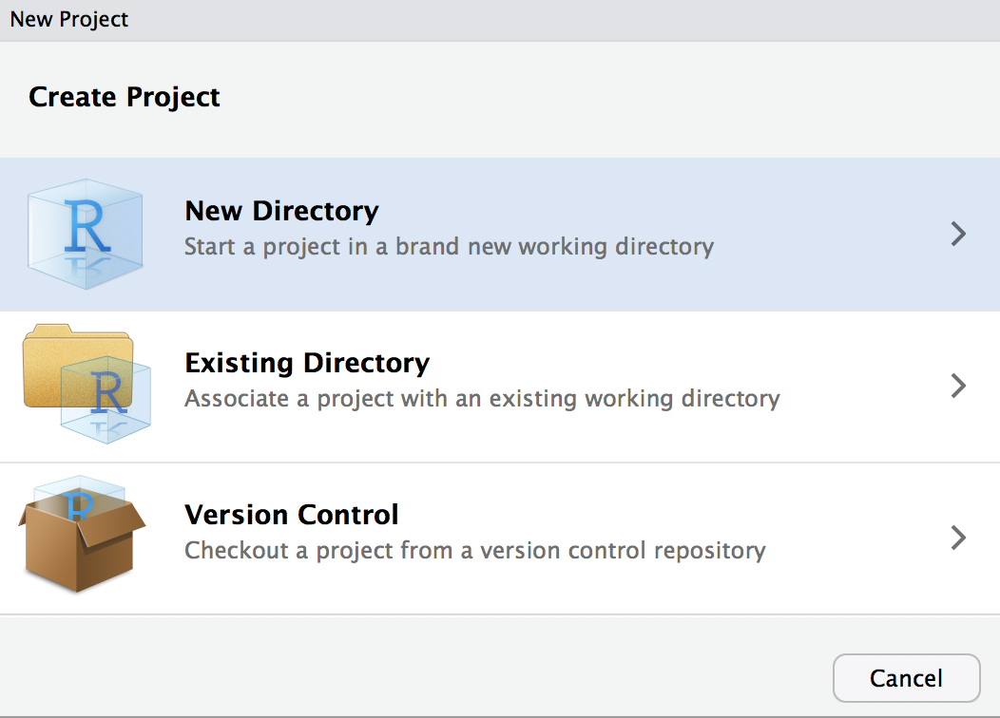
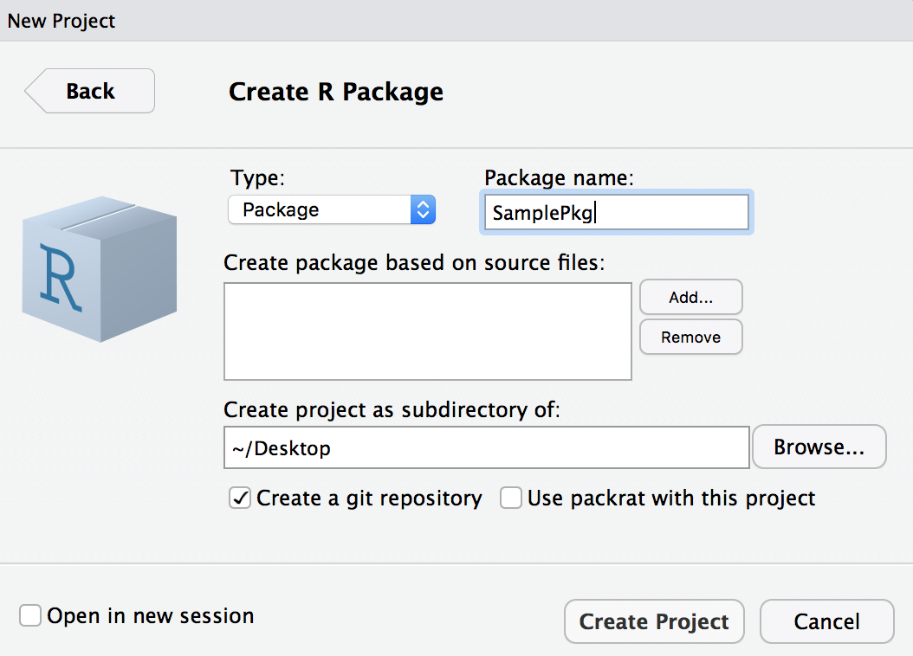
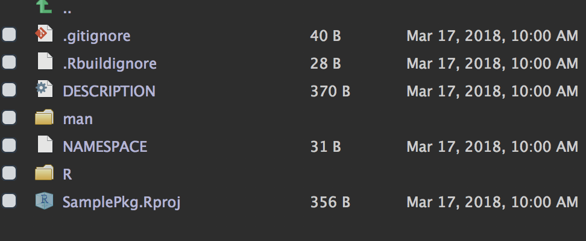

R で友達を助けた話
@y__mattu
2018/3/17 Fukuoka.R #10
はじめに
誰？
- 松村優哉
- Twitter: y__mattu
- GitHub: ymattu
- M1
- 計量経済学、ベイズ統計、因果推論、マーケティング
- 言語: R(歴は 3 年), SAS, Python
- https://ymattu.github.io/
- http://y-mattu.hatenablog.com/
- Tokyo.R / Japan.R 運営

著書(共著)

- 2部構成
- 第一部(基礎編)
- R 入門
- R のデータハンドリング基礎
- 第二部(応用編)
- テキストマイニング
- R のパフォーマンス向上
- 地理データ解析
- ベイズ最適化入門
- …etc
お仕事
- スマホのチャットアプリのログ解析(インターン)
- Web 広告の配信最適化(インターン)
- 自然言語処理系、画像解析(現インターン)
- お仕事募集してます…!
作ったパッケージ
MlBayesOpt
- 機械学習のパラメーターをベイズ最適化でチューニングする R パッケージ
- メンテ頑張ります…
rjumanpp
- 形態素解析機 JUMAN++ の R ラッパー
- 最低限の機能しかないのでメンテ頑張ります…
HindiMorph
- ヒンディ語の形態素解析器のラッパーパッケージ
- 今日はこの話と、パッケージの作り方入門的な話を。
改めて、今回の内容
R のパッケージ作成について
- HindiMorph パッケージ小話
- なんでパッケージを作るの？
- パッケージっを作るのって難しいんじゃないの？
- イマドキな「パッケージ作成法」
- 簡単なデモ
事の始まり
ある日
ヒンディー語の形態素解析をやりたい友
達がいて…
?????
形態素解析器はあるにはあるんですけど
Python製で…
ほう…?
ラッパーパッケージみたいなのを作って
ほしいんですよね
はあ…
よろしくお願いします!
決定!!!!???
- 実際にはもう少しやり取りがありました。
で、作りました
HindiMorph パッケージ
- https://github.com/ymattu/HindiMorph
- 関数1つだけのシンプルなパッケージ
入力
テキストを含むデータフレーム
tw <- HindiMorph:::tw_text2
tw# A tibble: 100 x 10
created_at screen_name text place_url place_name
<dttm> <chr> <chr> <chr> <chr>
1 2018-02-08 00:17:58 hil87667795 Hindi Bible. म… <NA> <NA>
2 2018-02-08 00:00:19 NowChangeIn… जिस दिन महिलाए… <NA> <NA>
3 2018-02-07 20:01:50 IRokade @KKMishraINC @… <NA> <NA>
4 2018-02-07 18:58:50 tumharianam… 14 को न जाने क… <NA> <NA>
5 2018-02-07 17:59:08 eRipples रेणुका चौधरी ज… <NA> <NA>
6 2018-02-07 17:47:56 Iaprakashsi… पहली बार अपराध… <NA> <NA>
7 2018-02-07 17:01:56 valhuram @jigneshmevani… <NA> <NA>
8 2018-02-07 14:24:22 KTbhartiya1 हम सिमटते गए उ… <NA> <NA>
9 2018-02-07 14:17:15 rightbanda @ANI आप अपना s… <NA> <NA>
10 2018-02-07 13:38:11 manishk2345… @HardikPatel_ … <NA> <NA>
11 2018-02-07 13:32:50 nirbandhpap… मरे गए गुलफाम … <NA> <NA>
12 2018-02-07 13:32:35 aashutoshsh… मरे गए गुलफाम … <NA> <NA>
13 2018-02-07 13:29:24 next9tvnews ISHQBAAZ|| MAH… <NA> <NA>
14 2018-02-07 10:50:06 TazzaKhabar पर्यटन, विरासत… <NA> <NA>
15 2018-02-07 09:21:00 bollysamach… ऐश्वर्या राय अ… <NA> <NA>
16 2018-02-07 08:41:19 hanshukasana @imVkohli @Anu… <NA> <NA>
17 2018-02-07 07:10:31 Vikram16873… @PreciousBaate… <NA> <NA>
18 2018-02-07 06:35:29 risinghimac… हिमाचल के पूर्… <NA> <NA>
19 2018-02-07 06:27:28 RPDULAR इस सब फ़र्ज़ी … <NA> <NA>
20 2018-02-07 05:37:17 Thekitabwala अभिनेत्री श्रि… <NA> <NA>
21 2018-02-07 02:34:40 OmMathur_bjp #NewIndia ##Po… <NA> <NA>
22 2018-02-06 20:38:04 shakil4271 गाजर का हलवा ब… <NA> <NA>
23 2018-02-06 19:40:42 TheHurera पहली बार सऊदी … <NA> <NA>
24 2018-02-06 16:28:55 SonOfChoudh… गाजर का हलवा ब… <NA> <NA>
25 2018-02-06 16:17:44 12MAHAKAAL लडका और लडकी ए… <NA> <NA>
26 2018-02-06 16:15:51 himachal_ab… Virbhadra की ब… <NA> <NA>
27 2018-02-06 14:53:52 AyodhyaPS दुनिया की कुछ … <NA> <NA>
28 2018-02-06 14:19:14 KalpeshPate… @ZeeNewsHindi … <NA> <NA>
29 2018-02-06 10:59:30 next9bhojpu… पवन सिंह के सा… <NA> <NA>
30 2018-02-06 10:55:09 kkaran86tha… "नई दुल्हन ससु… <NA> <NA>
31 2018-02-06 10:19:51 MukeshK9048… 👊🏻😡Waiter:- मे… <NA> <NA>
32 2018-02-06 08:50:42 informtosks… आज से यूपी बोर… <NA> <NA>
33 2018-02-06 08:15:38 BreakingTUBE #WATCH: विदेश … <NA> <NA>
34 2018-02-06 07:49:41 pbhushanL आधार कार्ड ने … <NA> <NA>
35 2018-02-06 07:47:18 DDNewsHindi विदेश मंत्री @… <NA> <NA>
36 2018-02-06 07:37:09 AmarChandra… @BeingSalmanKh… <NA> <NA>
37 2018-02-06 03:25:48 Keshav46013… नदी की धार के … <NA> <NA>
38 2018-02-06 02:17:05 Mahipal1311… सारे विपक्षी द… <NA> <NA>
39 2018-02-05 18:10:11 12MAHAKAAL "नई दुल्हन ससु… <NA> <NA>
40 2018-02-05 16:00:11 sapnasonker… आप जब अच्छे से… https://a… Varanasi
41 2018-02-05 14:37:12 drashishv @myogiadityana… <NA> <NA>
42 2018-02-05 14:20:45 AmitThakurt @anjalising8 @… <NA> <NA>
43 2018-02-05 14:16:58 drashishv बोर्ड परीक्षाए… <NA> <NA>
44 2018-02-05 12:11:35 sadyal_kapil @rssurjewala अ… <NA> <NA>
45 2018-02-05 11:46:45 ABHAYJANI59 @ZeeNews @Rubi… <NA> <NA>
46 2018-02-05 11:10:33 ashurai123 "@PMOIndia @ra… <NA> <NA>
47 2018-02-05 09:42:47 RKBajaj73 @News18India @… <NA> <NA>
48 2018-02-05 09:31:19 funjuice4all आपके जीवन को ब… <NA> <NA>
49 2018-02-05 08:32:39 1stIndiaNews #Mumbai : #Kan… <NA> <NA>
50 2018-02-05 07:21:58 GossipGanj फरवरी में सात … <NA> <NA>
51 2018-02-05 06:49:09 rahulkasaath @tusharcosmoo_… <NA> <NA>
52 2018-02-05 06:45:17 rahulkasaath @MohammadKaif … <NA> <NA>
53 2018-02-05 06:32:49 sami4frens @AlkaSaxena_ अ… <NA> <NA>
54 2018-02-05 05:53:03 Thekitabwala तो फरवरी 2019 … <NA> <NA>
55 2018-02-05 05:45:09 grsahu1992 "@ravinashurti… <NA> <NA>
56 2018-02-05 05:36:33 Thekitabwala 13 साल बड़े गौ… <NA> <NA>
57 2018-02-05 03:41:08 ViGodara @awasthis #बस_… <NA> <NA>
58 2018-02-04 20:32:39 Thekitabwala 13 साल बड़े गौ… <NA> <NA>
59 2018-02-04 18:44:06 AnshulR4546… "\"नदी की धार … <NA> <NA>
60 2018-02-04 18:18:14 shiva__777 @VasundharaBJP… <NA> <NA>
61 2018-02-04 17:41:57 sunil_vishen @AnupamHB किता… <NA> <NA>
62 2018-02-04 16:07:27 saurabhrajp… शब्दों को होठो… <NA> <NA>
63 2018-02-04 14:40:59 sanjajsagar एक बात पर गौर … <NA> <NA>
64 2018-02-04 14:31:50 DrBLKumawat5 @india_se_hu @… <NA> <NA>
65 2018-02-04 14:17:52 GouravBansa… देसी कीकर के क… <NA> <NA>
66 2018-02-04 13:01:47 zeerajastha… वर्ल्डकप में न… <NA> <NA>
67 2018-02-04 08:13:15 ETV_Rajasth… #जयपुर: #महाखे… <NA> <NA>
68 2018-02-04 07:37:25 Deshbandhun… बायोपिक के बार… <NA> <NA>
69 2018-02-04 07:34:25 NirvikarRana ये लोग फिर से … <NA> <NA>
70 2018-02-04 07:27:38 ColonelPras… भविष्य में ये … <NA> <NA>
71 2018-02-04 07:09:50 News000786 गजब! साड़ी पहन… <NA> <NA>
72 2018-02-04 05:12:44 VikkyBhamra भक्तो और भाजपा… <NA> <NA>
73 2018-02-04 05:12:36 TheAyushMis… तुम हार तो गए … <NA> <NA>
74 2018-02-04 04:30:09 widepoint_w… @Rsharma7988 अ… <NA> <NA>
75 2018-02-04 02:19:09 KRPandey1970 सरकार को अब दे… <NA> <NA>
76 2018-02-04 02:11:38 Arunbhaskar4 @thekiranbedi … <NA> <NA>
77 2018-02-03 18:57:12 RathorNirmal 👉👉👂 #suno__.#ऊ… <NA> <NA>
78 2018-02-03 17:35:33 PinkvillaHi… अब बॉलीवुड में… <NA> <NA>
79 2018-02-03 16:29:57 AjayPrakash… पश्चिमी उत्तर … <NA> <NA>
80 2018-02-03 16:11:49 Vinayak5161… @AlamAnsari930… <NA> <NA>
81 2018-02-03 15:45:44 SureshD7839… #बॉलीवुड_ने_बि… <NA> <NA>
82 2018-02-03 13:09:11 bshail4 दोनों ही पार्ट… <NA> <NA>
83 2018-02-03 12:43:51 bollysamach… श्वेता तिवारी … <NA> <NA>
84 2018-02-03 11:16:21 _iMeenakshi @SuhaibBadshah… <NA> <NA>
85 2018-02-03 09:19:20 janmat_news सीएम #वसुंधरा … https://a… New Delhi
86 2018-02-03 08:31:46 ajmalparjap… गाजर का हलवा ब… <NA> <NA>
87 2018-02-03 05:51:22 OfficeOf_RG_ @kidliberty अग… <NA> <NA>
88 2018-02-03 01:01:48 Lavindersin… @manishapatel7… <NA> <NA>
89 2018-02-02 16:55:26 Pradesh_Jag… जून में शादी क… <NA> <NA>
90 2018-02-02 15:36:53 makepercept… विरोधियों की भ… <NA> <NA>
91 2018-02-02 14:41:07 madhurendram आनंद आहूजा के … <NA> <NA>
92 2018-02-02 14:06:13 Rajendr5836… @ZeeNewsHindi … <NA> <NA>
93 2018-02-02 13:40:21 APHindiNews बिग बॉस के बाद… <NA> <NA>
94 2018-02-02 13:14:03 krupesh_21 मतलब हरा के ही… <NA> <NA>
95 2018-02-02 12:27:08 janman_tv BB के बाद सीधा… <NA> <NA>
96 2018-02-02 12:25:29 amukamrankh… @DwaipayanM @v… <NA> <NA>
97 2018-02-02 11:05:04 KMahaliya @LalitGhodasar… <NA> <NA>
98 2018-02-02 07:36:27 Pakwangali लस्सी बनाने के… <NA> <NA>
99 2018-02-02 06:36:23 Thekitabwala जून में शादी क… <NA> <NA>
100 2018-02-02 05:14:11 LikeYouMaa @M_shona_ 👶👸👶👸… <NA> <NA>
# ... with 5 more variables: place_full_name <chr>, place_type <chr>,
# country <chr>, country_code <chr>, date <int>出力
単語に品詞とテキストIDが付与されたデータフレーム
library(HindiMorph)
res <- hindi_morph(tw, text_col = text)
res# A tibble: 2,928 x 3
word morph document_id
<chr> <chr> <int>
1 "\"Hindi" NN 1
2 Bible. CC 1
3 मरकुस NN 1
4 13:30-31[30]मैं QC 1
5 तुम NN 1
6 से PSP 1
7 सच NN 1
8 कहता VM 1
9 हूं, NN 1
10 कि CC 1
11 जब PRP 1
12 तक PSP 1
13 ये DEM 1
14 सब NNC 1
15 बातें NN 1
16 न NEG 1
17 हो VM 1
18 लेंगी, NN 1
19 तब PRP 1
20 तक PSP 1
21 यह DEM 1
22 पीढ़ी NN 1
23 जाती VM 1
24 न NEG 1
25 रहेगी।[31]आकाश QC 1
26 और CC 1
27 पृथ्वी NN 1
28 टल VM 1
29 जाएंगे, NN 1
30 परन्तु NN 1
31 मेरी PRP 1
32 बातें NN 1
33 कभी PRP 1
34 न NEG 1
35 "टलेंगी।\"" NN 1
36 जिस DEM 2
37 दिन NN 2
38 महिलाएं NN 2
39 पुरुषों NN 2
40 को PSP 2
41 बुरा JJ 2
42 कहने VM 2
43 के PSP 2
44 स्थान NN 2
45 पर PSP 2
46 उनका PRP 2
47 स्थान NN 2
48 ले VM 2
49 लेंगी। NN 2
50 पुरुष NN 2
51 अपनी PRP 2
52 सारी QF 2
53 बुराई NN 2
54 त्याग NN 2
55 कर VM 2
56 महिलाओं NN 2
57 जैसा PSP 2
58 हो VM 2
59 जाएगा। NN 2
60 @KKMishraINC NN 3
61 @VTankha NN 3
62 @OfficeOfRG NN 3
63 उनके PRP 3
64 इस DEM 3
65 प्रयास NN 3
66 की PSP 3
67 सराहना NN 3
68 की VM 3
69 जानी VAUX 3
70 चाहिए VAUX 3
71 क्योंकि CC 3
72 मुख्य JJ 3
73 समस्याएं NN 3
74 वर्तमान NN 3
75 में PSP 3
76 गृहणियों NN 3
77 को PSP 3
78 ही RP 3
79 भुगतना VM 3
80 पड़ VAUX 3
81 रही VAUX 3
82 है VAUX 3
83 अब PRP 3
84 वह PRP 3
85 अपना PRP 3
86 आक्रोश NN 3
87 हाथ NN 3
88 और CC 3
89 मुंह NN 3
90 से PSP 3
91 ना NEG 3
92 करते VM 3
93 हुए VAUX 3
94 पैरों NN 3
95 से PSP 3
96 कर VM 3
97 लेंगी VAUX 3
98 आसानी NN 3
99 से PSP 3
100 लेकिन CC 3
101 यह DEM 3
102 लोग NN 3
103 धीरे RB 3
104 धीरे RB 3
105 अपने PRP 3
106 सही JJ 3
107 स्थान NN 3
108 पर PSP 3
109 पहुंच VM 3
110 रहे VAUX 3
111 हैं VAUX 3
112 खुद PRP 3
113 के PSP 3
114 ही RP 3
115 कार्यों NN 3
116 की PSP 3
117 वजह PSP 3
118 से PSP 3
119 14 NN 4
120 को PSP 4
121 न NEG 4
122 जाने VM 4
123 कितने QF 4
124 कंडोम NN 4
125 फटेंगे NN 4
126 और CC 4
127 न NEG 4
128 जाने VM 4
129 कितनी WQ 4
130 लडकिया NN 4
131 अपनी PRP 4
132 जवानी NN 4
133 में PSP 4
134 कदम NN 4
135 रख VM 4
136 लेंगी। NN 4
137 रेणुका NNPC 5
138 चौधरी NNP 5
139 जी RP 5
140 को PSP 5
141 लगा VM 5
142 कि CC 5
143 वो DEM 5
144 हँस NN 5
145 कर VM 5
146 राहुल NNP 5
147 की PSP 5
148 गुडबुक NN 5
149 में PSP 5
150 अपने PRP 5
151 प्वाइंट NN 5
152 बढ़ा VM 5
153 लेंगी VAUX 5
154 पर PSP 5
155 मोदी NNP 5
156 जी RP 5
157 ने PSP 5
158 उनको PRP 5
159 ही RP 5
160 हँसी NN 5
161 का PSP 5
162 पात्र NN 5
163 बनाकर VM 5
164 छोड़ VAUX 5
165 दिया.. NN 5
166 "\"पहली" NN 6
167 बार NNC 6
168 अपराध NN 6
169 में PSP 6
170 शामिल JJ 6
171 लोगों NN 6
172 का PSP 6
173 नहीं NEG 6
174 बताया VM 6
175 जाएगा VAUX 6
176 ब्योरा NN 6
177 ।९७३० NNC 6
178 पत्थरबाजों NN 6
179 पर PSP 6
180 से PSP 6
181 केस NN 6
182 वापस JJ 6
183 लेंगी VM 6
184 @MehboobaMufti VAUX 6
185 । SYM 6
186 मेरी PRP 6
187 मानो NN 6
188 तो RP 6
189 केस NN 6
190 वापस JJ 6
191 लेने VM 6
192 के PSP 6
193 साथ NST 6
194 साथ NST 6
195 इनकी PRP 6
196 ठूकाई NN 6
197 भी RP 6
198 कर VM 6
199 दो, NN 6
200 वरना CC 6
201 भटके NN 6
202 हुए VM 6
203 नौजवानों NN 6
204 की PSP 6
205 संख्या NN 6
206 और CC 6
207 बढ़ VM 6
208 जाएगी VAUX 6
209 ।#Kashmir NN 6
210 #stonePelters NN 6
211 "#kashmir\"" NN 6
212 @jigneshmevani80 QC 7
213 ठकरी NN 7
214 पाक NNP 7
215 के PSP 7
216 आतंकवादीयो NN 7
217 के PSP 7
218 लिए PSP 7
219 हमारी PRP 7
220 सेना NN 7
221 सक्षम JJ 7
222 है VM 7
223 और CC 7
224 निपट VM 7
225 लेंगी!!लेकिन NN 7
226 देश NN 7
227 के PSP 7
228 टुकडे- NN 7
229 टुकडे NN 7
230 करने VM 7
231 वाले PSP 7
232 और CC 7
233 जाती VM 7
234 वाद NN 7
235 का PSP 7
236 जहर NNC 7
237 घोलने NN 7
238 वाले PSP 7
239 भेड़ीयो NN 7
240 के PSP 7
241 खाल NN 7
242 मे PSP 7
243 छुपे NNC 7
244 गिदडो NN 7
245 से PSP 7
246 देश NN 7
247 से PSP 7
248 निपटना VM 7
249 पड NN 7
250 रहा VM 7
251 है VAUX 7
252 भारी-भारी NN 7
253 !!@AbodhBalak74 QC 7
254 @Goldenthrust NN 7
255 @PradeepINDIAN0 QC 7
256 @sksism NN 7
257 "\"हम" NN 8
258 सिमटते NN 8
259 गए VM 8
260 उनमें PRP 8
261 और CC 8
262 वो PRP 8
263 हमें PRP 8
264 भुलाते NN 8
265 गए,हम NN 8
266 मरते VM 8
267 गए VAUX 8
268 उनकी PRP 8
269 बेरुखी NN 8
270 से, NN 8
271 और CC 8
272 वो PRP 8
273 हमें PRP 8
274 आजमाते VM 8
275 गए,सोचा NN 8
276 की PSP 8
277 मेरी PRP 8
278 बेपनाह NN 8
279 मोहब्बत NN 8
280 देखकर VM 8
281 सीख NN 8
282 लेंगी VM 8
283 वफाएँ NN 8
284 करना,पर NN 8
285 हम PRP 8
286 रोते VM 8
287 गए VAUX 8
288 और CC 8
289 वो PRP 8
290 हमें PRP 8
291 खुशी NN 8
292 खुशी NN 8
293 रुलाते NN 8
294 "गए..\"" NN 8
295 "\"@ANI" NN 9
296 आप PRP 9
297 अपना PRP 9
298 sec NN 9
299 377 QC 9
300 का PSP 9
301 विरोध NN 9
302 करो, NNC 9
303 औरतों NN 9
304 का PSP 9
305 status NN 9
306 औरतें NN 9
307 देख VM 9
308 "लेंगी\"" NN 9
309 @HardikPatel_ NN 10
310 अब PRP 10
311 चुड़ियों NN 10
312 की PSP 10
313 दुकान NN 10
314 बंद JJ 10
315 कर VM 10
316 दी VAUX 10
317 है VAUX 10
318 आज NN 10
319 कल। NN 10
320 भाई NNPC 10
321 मंत्री NN 10
322 बन VM 10
323 गई VAUX 10
324 है VAUX 10
325 वहां PRP 10
326 से PSP 10
327 फुर्सत NN 10
328 नहीं NEG 10
329 मिलती VM 10
330 है VAUX 10
331 मिलेगी VM 10
332 तो CC 10
333 फिर RB 10
334 लगा VM 10
335 लेंगी VAUX 10
336 आप PRP 10
337 परेशान JJ 10
338 ना NEG 10
339 हों। NN 10
340 मरे NN 11
341 गए VM 11
342 गुलफाम NN 11
343 अजी NN 11
344 हां INJ 11
345 मारे VM 11
346 गए VAUX 11
347 गुलफाम।वाह NN 11
348 बेटा। NN 11
349 76% QC 11
350 यानी CC 11
351 86 QCC 11
352 लाख QCC 11
353 करोड़ QC 11
354 के PSP 11
355 NPA CC 11
356 को PSP 11
357 32% QC 11
358 यानी CC 11
359 कुछ QF 11
360 लाख QCC 11
361 करोड़ QC 11
362 बताया VM 11
363 करते VAUX 11
364 रहे VAUX 11
365 हो।बच्चा। NN 11
366 तुमपर NN 11
367 तो RP 11
368 संसद NN 11
369 में PSP 11
370 महाअभियोग NN 11
371 लगना NN 11
372 चाहिए। NN 11
373 इसमें PRP 11
374 अम्मा NN 11
375 अपने PRP 11
376 बचवा NN 11
377 के PSP 11
378 साथ NST 11
379 किनारा NN 11
380 कर VM 11
381 लेंगी। NN 11
382 फंसोगे NN 11
383 आप PRP 11
384 ही RP 11
385 डॉक्टर NN 11
386 साहेब।(Pradeep NN 11
387 Shanker) CC 11
388 मरे NN 12
389 गए VM 12
390 गुलफाम NN 12
391 अजी NN 12
392 हां INJ 12
393 मारे VM 12
394 गए VAUX 12
395 गुलफाम।वाह NN 12
396 बेटा। NN 12
397 76% QC 12
398 यानी CC 12
399 86 QCC 12
400 लाख QCC 12
401 करोड़ QC 12
402 के PSP 12
403 NPA CC 12
404 को PSP 12
405 32% QC 12
406 यानी CC 12
407 कुछ QF 12
408 लाख QCC 12
409 करोड़ QC 12
410 बताया VM 12
411 करते VAUX 12
412 रहे VAUX 12
413 हो।बच्चा। NN 12
414 तुमपर NN 12
415 तो RP 12
416 संसद NN 12
417 में PSP 12
418 महाअभियोग NN 12
419 लगना NN 12
420 चाहिए। NN 12
421 इसमें PRP 12
422 अम्मा NN 12
423 अपने PRP 12
424 बचवा NN 12
425 के PSP 12
426 साथ NST 12
427 किनारा NN 12
428 कर VM 12
429 लेंगी। NN 12
430 फंसोगे NN 12
431 आप PRP 12
432 ही RP 12
433 डॉक्टर NN 12
434 साहेब।(Pradeep NN 12
435 Shanker) CC 12
436 ISHQBAAZ|| CC 13
437 MAHA-EPISODE|| CC 13
438 बेगम NNPC 13
439 खान NNP 13
440 इस DEM 13
441 तरह NN 13
442 लेंगी VM 13
443 शिवाय NN 13
444 की PSP 13
445 जिंदगी NN 13
446 में PSP 13
447 ENTRY|| CC 13
448 Begam CC 13
449 Khan CC 13
450 "\"पर्यटन," NN 14
451 विरासत NN 14
452 एवं CC 14
453 संस्कृति NN 14
454 का PSP 14
455 संगम NNP 14
456 होगी VM 14
457 विंटेज NN 14
458 कार NN 14
459 रैली, NN 14
460 कौन WQ 14
461 सी RP 14
462 कारें NN 14
463 लेंगी VM 14
464 ऐश्वर्या NNPC 15
465 राय NNP 15
466 अपनी PRP 15
467 ऑफ-शोल्डर NN 15
468 काली NN 15
469 ड्रेस NN 15
470 से PSP 15
471 चुरा VM 15
472 लेंगी VAUX 15
473 आपका PRP 15
474 दिल; NN 15
475 लगीं VM 15
476 इतनी लाजवाब! NN 15
477 @imVkohli NN 16
478 @AnushkaSharma NN 16
479 @OfficialCSFilms NNC 16
480 खेल NN 16
481 पर PSP 16
482 ध्यान NN 16
483 दे VM 16
484 भैया NN 16
485 प्रमोशन NN 16
486 तो RP 16
487 भाभीजी NN 16
488 ही RP 16
489 कर VM 16
490 लेंगीनई NN 16
491 नई JJ 16
492 बीवी NN 16
493 है VM 16
494 कुछ QF 16
495 ज्यादा QF 16
496 ही RP 16
497 प्यार NN 16
498 दिखा VM 16
499 रहे VAUX 16
500 हो😂😂 NN 16
501 "\"@PreciousBaatein" NNC 17
502 पतियों NN 17
503 का PSP 17
504 क्या WQ 17
505 होगा VM 17
506 वो PRP 17
507 बाद NST 17
508 में PSP 17
509 सोचेंगें, NN 17
510 पहले NST 17
511 वो PRP 17
512 अपने PRP 17
513 पुर्जे NN 17
514 छीलकर NN 17
515 कर VM 17
516 जख्मी JJ 17
517 कर VM 17
518 "लेंगी\"" NN 17
519 "\"हिमाचल" NN 18
520 के PSP 18
521 पूर्व JJ 18
522 CM CC 18
523 वीरभद्र NNP 18
524 की PSP 18
525 बेटी NN 18
526 बनीं VM 18
527 मणिपुर NNPC 18
528 हाईकोर्ट NNP 18
529 की PSP 18
530 चीफ NNC 18
531 जस्टिस, NN 18
532 9 NN 18
533 को PSP 18
534 लेंगी VM 18
535 शपथ NN 18
536 इस DEM 19
537 सब NNC 19
538 फ़र्ज़ी NN 19
539 राष्ट्रवादी NNPC 19
540 एकाउंट्स NNP 19
541 का PSP 19
542 उपयोग NN 19
543 जनता NN 19
544 को PSP 19
545 मोदी NNP 19
546 जी RP 19
547 के PSP 19
548 खिलाफ PSP 19
549 भड़काने VM 19
550 के PSP 19
551 लिये VM 19
552 किया VAUX 19
553 जायेगा।11. QC 19
554 एक QC 19
555 बात NN 19
556 पर PSP 19
557 गौर NN 19
558 करे VM 19
559 की PSP 19
560 पप्पू(राहुल NNC 19
561 गांधी) NN 19
562 चुप JJ 19
563 हो VM 19
564 गया VAUX 19
565 है। NN 19
566 मालूम JJ 19
567 है VM 19
568 क्यों?12. QC 19
569 क्योंकि CC 19
570 क्वीन(सोनिया NNC 19
571 गांधी) NN 19
572 ने PSP 19
573 निर्देश NN 19
574 दिया VM 19
575 है VAUX 19
576 कि CC 19
577 वह PRP 19
578 मुहँ NN 19
579 बन्द JJ 19
580 रक्खे NN 19
581 बाकी JJ 19
582 वह PRP 19
583 देख VM 19
584 लेंगी। NN 19
585 "\"अभिनेत्री" NN 20
586 श्रिया NN 20
587 सरन NNP 20
588 जल्द RB 20
589 कर VM 20
590 सकती VAUX 20
591 है VAUX 20
592 अपनी PRP 20
593 शादी NN 20
594 की PSP 20
595 घोषणा, NN 20
596 रशियन NNC 20
597 ब्वॉयफ्रेंड NN 20
598 के PSP 20
599 साथ NST 20
600 लेंगी VM 20
601 सात फेरे NN 20
602 #NewIndia NNC 21
603 ##PositiveIndia NN 21
604 विदेश NNPC 21
605 मंत्री NNP 21
606 @SushmaSwaraj NN 21
607 साउदी NN 21
608 अरब QC 21
609 की PSP 21
610 अपनी PRP 21
611 प्रथम QO 21
612 यात्रा NN 21
613 पर PSP 21
614 हैं; NN 21
615 वे PRP 21
616 प्रतिष्ठित JJ 21
617 #Janadriyah NNC 21
618 त्योहार NN 21
619 के PSP 21
620 उद्घाटन NNC 21
621 समारोह NN 21
622 में PSP 21
623 हिस्सा NN 21
624 लेंगी VM 21
625 जिसमें PRP 21
626 भारत NNP 21
627 विशिष्ट JJ 21
628 अतिथि NN 21
629 देश NN 21
630 है VM 21
631 गाजर NN 22
632 का PSP 22
633 हलवा NN 22
634 बनाने VM 22
635 के PSP 22
636 लिए PSP 22
637 भारतीय JJ 22
638 महिलाएँ NN 22
639 1200 QC 22
640 काजू NN 22
641 800 QC 22
642 बादाम NN 22
643 और CC 22
644 ड्राई NNC 22
645 फ्रूट NN 22
646 और CC 22
647 700 QC 22
648 रुपये NNC 22
649 किलो NN 22
650 देसी JJ 22
651 घी NN 22
652 सब NNC 22
653 खरीद NN 22
654 लेंगी VM 22
655 लेकिन CC 22
656 गाजर NN 22
657 जब PRP 22
658 तक PSP 22
659 दस QC 22
660 रूपये NN 22
661 की PSP 22
662 डेढ़ NN 22
663 किलो NN 22
664 ना NEG 22
665 हो VM 22
666 जाये NN 22
667 तब PRP 22
668 तक PSP 22
669 हलवा NN 22
670 बनाने VM 22
671 का PSP 22
672 प्रोग्राम NN 22
673 पेंडिंग NN 22
674 ही RP 22
675 रखती NN 22
676 हैं!अब NN 22
677 बताइये NN 22
678 देश NN 22
679 का PSP 22
680 किसान NN 22
681 कैसे WQ 22
682 खुश JJ 22
683 होगा! NN 22
684 "\"पहली" NNC 23
685 बार NN 23
686 सऊदी NNPC 23
687 अरब NNP 23
688 पहुंचीं VM 23
689 सुषमा NNPC 23
690 स्वराज, NNP 23
691 जनाद्रिया NNC 23
692 फेस्टिवल NN 23
693 में PSP 23
694 लेंगी VM 23
695 हिस्सा NN 23
696 सउदी NN 23
697 अरब QC 23
698 जा VM 23
699 कर VM 23
700 उन PRP 23
701 से PSP 23
702 दोस्ती NN 23
703 का PSP 23
704 हाथ NN 23
705 मीला NN 23
706 ते NN 23
707 हो VM 23
708 और CC 23
709 भारत NNP 23
710 मे PSP 23
711 वही DEM 23
712 हाथ NN 23
713 किया VM 23
714 वीकास NN 23
715 के PSP 23
716 काम NN 23
717 मे PSP 23
718 यूज NN 23
719 करते VM 23
720 हो VAUX 23
721 कभी PRP 23
722 हमारे PRP 23
723 देश NN 23
724 मे PSP 23
725 कीसी NNC 23
726 मूसलमान NN 23
727 से PSP 23
728 दोस्ती NN 23
729 काम NN 23
730 हाथ NN 23
731 मिलाया VM 23
732 है VAUX 23
733 गाजर NN 24
734 का PSP 24
735 हलवा NN 24
736 बनाने VM 24
737 के PSP 24
738 लिए PSP 24
739 भारतीय JJ 24
740 महिलाएँ NN 24
741 1200 QC 24
742 काजू NN 24
743 800 QC 24
744 बादाम NN 24
745 और CC 24
746 ड्राई NNC 24
747 फ्रूट NN 24
748 और CC 24
749 700 QC 24
750 रुपये NNC 24
751 किलो NN 24
752 देसी JJ 24
753 घी NN 24
754 सब NNC 24
755 खरीद NN 24
756 लेंगी VM 24
757 लेकिन CC 24
758 गाजर NN 24
759 जब PRP 24
760 तक PSP 24
761 दस QC 24
762 रूपये NN 24
763 की PSP 24
764 डेढ़ NN 24
765 किलो NN 24
766 ना NEG 24
767 हो VM 24
768 जाये NN 24
769 तब PRP 24
770 तक PSP 24
771 हलवा NN 24
772 बनाने VM 24
773 का PSP 24
774 प्रोग्राम NN 24
775 पेंडिंग NN 24
776 ही RP 24
777 रखती NN 24
778 हैं!अब NN 24
779 बताइये NN 24
780 देश NN 24
781 का PSP 24
782 किसान NN 24
783 कैसे WQ 24
784 खुश JJ 24
785 होगा! NN 24
786 "\"लडका" NN 25
787 और CC 25
788 लडकी NN 25
789 एक NNPC 25
790 रेस्टोरेंट NNP 25
791 गए VM 25
792 |वेटर NNC 25
793 - SYM 25
794 मैम NN 25
795 , SYM 25
796 आप PRP 25
797 कुछ PRP 25
798 लेंगी VM 25
799 |लडकी NNC 25
800 - SYM 25
801 भैया NN 25
802 एक QC 25
803 सब्जी NN 25
804 वाली PSP 25
805 रोटी NN 25
806 लाना VM 25
807 |वेटर NNC 25
808 - SYM 25
809 क्या WQ 25
810 ?? NN 25
811 लडका NNC 25
812 - SYM 25
813 गांव NN 25
814 से PSP 25
815 आई VM 25
816 है VAUX 25
817 , SYM 25
818 पिज्जा NNC 25
819 मांग VM 25
820 रही VAUX 25
821 है VAUX 25
822 "|😂😂\"" NN 25
823 "\"Virbhadra" NN 26
824 की PSP 26
825 बेटी NN 26
826 अभिलाषा NN 26
827 होंगी VM 26
828 मणिपुर NNP 26
829 High CC 26
830 Court CC 26
831 की VM 26
832 Chief CC 26
833 Justice, CC 26
834 9 NN 26
835 को PSP 26
836 लेंगी VM 26
837 शपथ NNC 26
838 @himachal_abhi NN 26
839 "\"दुनिया" NN 27
840 की PSP 27
841 कुछ QF 27
842 अविश्वसनीय JJ 27
843 सड़कें, NN 27
844 जो PRP 27
845 आपका PRP 27
846 मन NN 27
847 मोह NN 27
848 लेंगी!#AllNewMotoX4 QCC 27
849 #3StoreysTrailerTomorrow QC 27
850 #JabKoiBaatOutNow NN 27
851 #StopCryptoFUD NN 27
852 #InfinixHotS3 QCC 27
853 @ZeeNewsHindi NN 28
854 इस DEM 28
855 भडवे NN 28
856 को PSP 28
857 भारतीय JJ 28
858 सेना NN 28
859 के PSP 28
860 हवाले PSP 28
861 कर VM 28
862 देना VAUX 28
863 चाहिए VAUX 28
864 बाकी JJ 28
865 सब NNC 28
866 सेना NN 28
867 निपट VM 28
868 लेंगी VAUX 28
869 सुवर NN 28
870 की PSP 28
871 मौत NN 28
872 मरेगा NN 28
873 ये। NN 28
874 पवन NNPC 29
875 सिंह NNP 29
876 के PSP 29
877 साथ NST 29
878 उनकी PRP 29
879 चार QC 29
880 फिल्मों NN 29
881 में PSP 29
882 कौन WQ 29
883 सी RP 29
884 हिरोइन NN 29
885 लेंगी VM 29
886 जगह... NN 29
887 | NN 29
888 Pawan CC 29
889 Singh CC 29
890 Film CC 29
891 Actresses CC 29
892 | NN 29
893 "\"नई" NN 30
894 दुल्हन NN 30
895 ससुराल NN 30
896 पहुंची,जिस NN 30
897 दिन NN 30
898 उसे PRP 30
899 खाना NN 30
900 बनाना VM 30
901 था,.सास NN 30
902 ने PSP 30
903 कहा VM 30
904 बेटी NN 30
905 तुझे NN 30
906 जो PRP 30
907 भी RP 30
908 बनाना VM 30
909 आता VAUX 30
910 है VAUX 30
911 बना VM 30
912 ले..बहु NN 30
913 ने PSP 30
914 10 QC 30
915 मिनट NN 30
916 बाद NST 30
917 सास NN 30
918 से PSP 30
919 पूछा VM 30
920 "\"\"मम्मीजी" NN 30
921 आप PRP 30
922 पेग NN 30
923 सोडा NN 30
924 केसाथ NN 30
925 लेंगी VM 30
926 या CC 30
927 पानी NN 30
928 के PSP 30
929 साथ NST 30
930 "?\"\"😛\"" NN 30
931 👊🏻😡Waiter:- NN 31
932 मे'म NN 31
933 आप PRP 31
934 क्या WQ 31
935 लेंगी VM 31
936 ? SYM 31
937 Green CC 31
938 tea NN 31
939 या CC 31
940 black NNC 31
941 tea NN 31
942 ? SYM 31
943 ☕लड़की:- NN 31
944 कोई PRP 31
945 *दूसरा NN 31
946 कलर* NN 31
947 नही NEG 31
948 है VM 31
949 ? SYM 31
950 जैसे PSP 31
951 Pink CC 31
952 ?!! NNC 31
953 😜 NN 31
954 आज NN 32
955 से PSP 32
956 यूपी NNP 32
957 बोर्ड NN 32
958 की PSP 32
959 परीक्षा NN 32
960 शुरू NN 32
961 होगई NN 32
962 है VM 32
963 जिसमे NN 32
964 10 QC 32
965 और CC 32
966 10+2 QC 32
967 के PSP 32
968 छात्र NN 32
969 और CC 32
970 छात्राएं NNC 32
971 भाग NN 32
972 लेंगी VM 32
973 इस PRP 32
974 लिए PSP 32
975 मैं PRP 32
976 संजय NNPC 32
977 कुमार NNPC 32
978 यादव NNP 32
979 (मास्टर) NN 32
980 आप PRP 32
981 सभी PRP 32
982 को PSP 32
983 हार्दिक NN 32
984 शुभ JJ 32
985 कामना NN 32
986 और CC 32
987 आशीर्वाद NN 32
988 देता VM 32
989 हूं VAUX 32
990 इसके PRP 32
991 साथ NST 32
992 ही RP 32
993 आप PRP 32
994 सभी PRP 32
995 के PSP 32
996 उज्जवल NNPC 32
997 भविश्व NNP 32
998 की PSP 32
999 कामना NN 32
1000 करता VM 32
1001 हु NN 32
1002 #WATCH: NN 33
1003 विदेश NNPC 33
1004 मंत्री NNP 33
1005 @SushmaSwaraj NN 33
1006 साउदी NN 33
1007 अरब QC 33
1008 की PSP 33
1009 अपनी PRP 33
1010 प्रथम QO 33
1011 यात्रा NN 33
1012 पर PSP 33
1013 हैं; NN 33
1014 वे PRP 33
1015 प्रतिष्ठित JJ 33
1016 #Janadriyah NNC 33
1017 त्योहार NN 33
1018 के PSP 33
1019 उद्घाटन NNC 33
1020 समारोह NN 33
1021 में PSP 33
1022 हिस्सा NN 33
1023 लेंगी VM 33
1024 जिसमें PRP 33
1025 भारत NNP 33
1026 विशिष्ट JJ 33
1027 अतिथि NN 33
1028 देश NN 33
1029 है VM 33
1030 @PMOIndia NN 33
1031 @HMOIndia NN 33
1032 @MEAIndia NN 33
1033 "\"आधार" NNC 34
1034 कार्ड NN 34
1035 ने PSP 34
1036 झारखंड NNP 34
1037 में PSP 34
1038 एक QC 34
1039 ओर NST 34
1040 आदिवासी JJ 34
1041 महिला NN 34
1042 की PSP 34
1043 जान NN 34
1044 ली VM 34
1045 । SYM 34
1046 ये DEM 34
1047 गरीब JJ 34
1048 काफी QF 34
1049 समय NN 34
1050 से PSP 34
1051 बीमार JJ 34
1052 थी, VM 34
1053 इसकी PRP 34
1054 छोटी JJ 34
1055 बहन NN 34
1056 राशन NN 34
1057 लेने VM 34
1058 के PSP 34
1059 किये VM 34
1060 दुकान NN 34
1061 पर PSP 34
1062 गयी VM 34
1063 तो PRP 34
1064 दुकानदार NN 34
1065 ने PSP 34
1066 राशन NN 34
1067 नही NEG 34
1068 दिया VM 34
1069 क्योंकि CC 34
1070 फिंगरप्रिंट NNC 34
1071 मेच NN 34
1072 नही NEG 34
1073 हुए VM 34
1074 थे VAUX 34
1075 । SYM 34
1076 मोदी NNP 34
1077 जी RP 34
1078 आधार NNC 34
1079 कार्ड NN 34
1080 के PSP 34
1081 लिए PSP 34
1082 आपकी PRP 34
1083 सनक NN 34
1084 और CC 34
1085 कितनी WQ 34
1086 जानें NN 34
1087 लेंगी VM 34
1088 ? SYM 34
1089 विदेश NNPC 35
1090 मंत्री NNP 35
1091 @SushmaSwaraj NN 35
1092 साउदी NN 35
1093 अरब QC 35
1094 की PSP 35
1095 अपनी PRP 35
1096 प्रथम QO 35
1097 यात्रा NN 35
1098 पर PSP 35
1099 हैं; NN 35
1100 वे PRP 35
1101 प्रतिष्ठित JJ 35
1102 #Janadriyah NNC 35
1103 त्योहार NN 35
1104 के PSP 35
1105 उद्घाटन NNC 35
1106 समारोह NN 35
1107 में PSP 35
1108 हिस्सा NN 35
1109 लेंगी VM 35
1110 जिसमें PRP 35
1111 भारत NNP 35
1112 विशिष्ट JJ 35
1113 अतिथि NN 35
1114 देश NN 35
1115 है VM 35
1116 "\"@BeingSalmanKhan" NN 36
1117 हजारो NN 36
1118 लड़कियाँ NN 36
1119 फांसी NN 36
1120 लगा VM 36
1121 लेंगी,😉आप NN 36
1122 ही RP 36
1123 जिम्मेदार JJ 36
1124 रहोगे NN 36
1125 सर्,😄😄वैसे NN 36
1126 बधाई NN 36
1127 "हो,,💐💐💐\"" NN 36
1128 "\"नदी" NN 37
1129 की PSP 37
1130 धार NN 37
1131 के PSP 37
1132 विपरीत PSP 37
1133 जाकर VM 37
1134 देखिये,हिम्मत NN 37
1135 को PSP 37
1136 हर QF 37
1137 मुश्किल NN 37
1138 में PSP 37
1139 आज़मा NN 37
1140 कर VM 37
1141 देखिये,आँधियाँ NN 37
1142 खुद PRP 37
1143 मोड़ NN 37
1144 लेंगी VM 37
1145 अपना PRP 37
1146 रास्ता,एक NN 37
1147 बार NN 37
1148 कोशिश NN 37
1149 करके VM 37
1150 दीपक NN 37
1151 जला VM 37
1152 कर VAUX 37
1153 तो CC 37
1154 देखिये NNC 37
1155 !!जय NN 37
1156 श्री NNPC 37
1157 राधे NNP 37
1158 "कृष्णा!!\"" NN 37
1159 सारे QF 38
1160 विपक्षी JJ 38
1161 दल NN 38
1162 के PSP 38
1163 नेता NN 38
1164 ज्योतिष NN 38
1165 बन VM 38
1166 गये VAUX 38
1167 है VAUX 38
1168 बीजेपी NNP 38
1169 को PSP 38
1170 इतनी QF 38
1171 सीटें NN 38
1172 लेंगी VM 38
1173 उतनी QF 38
1174 सीटें NN 38
1175 मिलेंगी VM 38
1176 बेचारे NN 38
1177 दोगले NN 38
1178 बीजेपी NNP 38
1179 के PSP 38
1180 बड़े JJ 38
1181 हितेषी NN 38
1182 हैअबे NN 38
1183 भड़वो NN 38
1184 कभी PRP 38
1185 तो RP 38
1186 अपनी PRP 38
1187 औकात NN 38
1188 भी RP 38
1189 तो RP 38
1190 देख VM 38
1191 लो VAUX 38
1192 "\"नई" NN 39
1193 दुल्हन NN 39
1194 ससुराल NN 39
1195 पहुंची,जिस NN 39
1196 दिन NN 39
1197 उसे PRP 39
1198 खाना NN 39
1199 बनाना VM 39
1200 था,.सास NN 39
1201 ने PSP 39
1202 कहा VM 39
1203 बेटी NN 39
1204 तुझे NN 39
1205 जो PRP 39
1206 भी RP 39
1207 बनाना VM 39
1208 आता VAUX 39
1209 है VAUX 39
1210 बना VM 39
1211 ले..बहु NN 39
1212 ने PSP 39
1213 १० QC 39
1214 मिनट NN 39
1215 बाद NST 39
1216 सास NN 39
1217 से PSP 39
1218 पूछा VM 39
1219 "\"\"मम्मीजी" NN 39
1220 आप PRP 39
1221 पेग NN 39
1222 सोडा NN 39
1223 केसाथ NN 39
1224 लेंगी VM 39
1225 या CC 39
1226 पानी NN 39
1227 के PSP 39
1228 साथ NST 39
1229 "?\"\"😛\"" NN 39
1230 आप PRP 40
1231 जब PRP 40
1232 अच्छे NN 40
1233 से PSP 40
1234 किसी PRP 40
1235 को PSP 40
1236 समझाते NN 40
1237 है VM 40
1238 कि CC 40
1239 मेरे PRP 40
1240 साथ NST 40
1241 अन्याय NN 40
1242 मत NN 40
1243 करो। NN 40
1244 वो PRP 40
1245 सोचते VM 40
1246 है VAUX 40
1247 क्या WQ 40
1248 कर VM 40
1249 लेंगी VAUX 40
1250 और CC 40
1251 अपनी PRP 40
1252 मन NN 40
1253 मानी VM 40
1254 करो। NN 40
1255 ..................लेकिन NN 40
1256 कुछ QF 40
1257 बहादुर NNP 40
1258 लोग NN 40
1259 होते VM 40
1260 है VAUX 40
1261 जो PRP 40
1262 बिना NEG 40
1263 result NN 40
1264 की PSP 40
1265 चिन्ता NN 40
1266 किये VM 40
1267 हुए। NNC 40
1268 अन्याय NN 40
1269 के PSP 40
1270 खिलाप NN 40
1271 लड़ते NN 40
1272 है VM 40
1273 क्योंकि CC 40
1274 अन्याय NN 40
1275 कभी PRP 40
1276 भी RP 40
1277 जीत NN 40
1278 नहीं NEG 40
1279 सकता। VM 40
1280 @myogiadityanath NN 41
1281 @drdineshbjp NN 41
1282 @PMOIndia NN 41
1283 इण्डिया NN 41
1284 टुडे NNC 41
1285 ग्रुप NN 41
1286 की PSP 41
1287 प्रतिष्ठित JJ 41
1288 वेबसाइट NN 41
1289 में PSP 41
1290 मेरा PRP 41
1291 प्रकाशित JJ 41
1292 मेरा PRP 41
1293 लेख NN 41
1294 शीर्षक NN 41
1295 'बोर्ड NN 41
1296 परीक्षाएं NN 41
1297 लेंगी VM 41
1298 योगी NNC 41
1299 सरकार NN 41
1300 की PSP 41
1301 परीक्षा'। NNC 41
1302 पढ़ने NN 41
1303 के PSP 41
1304 लिए PSP 41
1305 लिंक NNP 41
1306 का PSP 41
1307 प्रयोग NN 41
1308 @anjalising8 QC 42
1309 @sumairakh NN 42
1310 @Zee_Hindustan NN 42
1311 @narendramodi NN 42
1312 @rajnathsingh NNC 42
1313 सरकार NN 42
1314 की PSP 42
1315 खामोशी NN 42
1316 पता NN 42
1317 नही NEG 42
1318 कब WQ 42
1319 टूटेंगी NN 42
1320 और CC 42
1321 कब WQ 42
1322 बदला VM 42
1323 लेंगी.....👍👍👍👍👍 NN 42
1324 बोर्ड NN 43
1325 परीक्षाएं NN 43
1326 लेंगी VM 43
1327 योगी NNC 43
1328 सरकार NN 43
1329 की PSP 43
1330 परीक्षा NN 43
1331 via NN 43
1332 @ichowk_ NN 43
1333 "\"@rssurjewala" NN 44
1334 असली JJ 44
1335 विधवा NN 44
1336 बिलाप NN 44
1337 तो RP 44
1338 तब PRP 44
1339 शुरू NN 44
1340 होगा VM 44
1341 ,,जब NN 44
1342 आधी QF 44
1343 रात NN 44
1344 को PSP 44
1345 मोदी NNP 44
1346 जी RP 44
1347 घोषणा NN 44
1348 करेंगे..जम्मू NN 44
1349 कश्मीर NNP 44
1350 में PSP 44
1351 अनुच्छेद NNPC 44
1352 35A QC 44
1353 और CC 44
1354 370 NN 44
1355 को PSP 44
1356 समाप्त JJ 44
1357 किया VM 44
1358 जाता VAUX 44
1359 है VAUX 44
1360 रोहिंग्यो NN 44
1361 और CC 44
1362 बांग्लादेशीयों NN 44
1363 को PSP 44
1364 भारत NNP 44
1365 में PSP 44
1366 नहीं NEG 44
1367 रहने VM 44
1368 देंगे VAUX 44
1369 कांगिये,आपिये,वामिये NN 44
1370 छाती NN 44
1371 पीट-पीट NN 44
1372 कर VM 44
1373 मातम NN 44
1374 मनायेंगे NN 44
1375 और CC 44
1376 दो QC 44
1377 कलमुंही NN 44
1378 तो RP 44
1379 आत्महत्या NN 44
1380 कर VM 44
1381 "लेंगी\"" NN 44
1382 "\"@ZeeNews" NN 45
1383 @RubikaLiyaquat NN 45
1384 रुबिका NN 45
1385 जी RP 45
1386 अब PRP 45
1387 जो PRP 45
1388 भी RP 45
1389 सरकार NN 45
1390 जो PRP 45
1391 निर्णय NN 45
1392 लेंगी VM 45
1393 ,क्या NN 45
1394 करेगी VM 45
1395 ? SYM 45
1396 कैसे WQ 45
1397 करेगी VM 45
1398 ? SYM 45
1399 अब PRP 45
1400 सरकार NN 45
1401 आपको PRP 45
1402 प्रथम QO 45
1403 बतायेगी NN 45
1404 . SYM 45
1405 फीर NN 45
1406 आप PRP 45
1407 टीव्ही NN 45
1408 पर PSP 45
1409 बता VM 45
1410 देना VAUX 45
1411 .क्योकी NN 45
1412 आप PRP 45
1413 ऐसेही NNC 45
1414 टीव्ही NN 45
1415 पर PSP 45
1416 पुछ NN 45
1417 रही VM 45
1418 थी VAUX 45
1419 कि CC 45
1420 सरकार NN 45
1421 कब WQ 45
1422 ऍक्शन NN 45
1423 "लेंगी\"" NN 45
1424 "\"@PMOIndia" NN 46
1425 @rashtrapatibhvn NN 46
1426 @MVenkaiahNaidu NN 46
1427 #SupremeCourt NN 46
1428 देश NN 46
1429 में PSP 46
1430 कोई PRP 46
1431 भी RP 46
1432 कानून NN 46
1433 क्यों WQ 46
1434 इतना QF 46
1435 गोल NN 46
1436 गोल NN 46
1437 होता VM 46
1438 है VAUX 46
1439 अष्पष्ट, NN 46
1440 हिन्दू NNC 46
1441 मैरिज NNC 46
1442 एक्ट NNP 46
1443 को PSP 46
1444 ही RP 46
1445 ले VM 46
1446 लीजिये NNC 46
1447 लड़कियों NN 46
1448 को PSP 46
1449 दोनों QC 46
1450 घर NN 46
1451 "\"\"पिता" NN 46
1452 और CC 46
1453 "पति\"\"" NN 46
1454 दोनों NN 46
1455 के PSP 46
1456 सम्पति NN 46
1457 में PSP 46
1458 अधिकार NN 46
1459 दिया VM 46
1460 गया VAUX 46
1461 है VAUX 46
1462 जब PRP 46
1463 सारी QF 46
1464 जगह NN 46
1465 लड़किया NN 46
1466 ही RP 46
1467 ले VM 46
1468 लेंगी VAUX 46
1469 तो CC 46
1470 लड़के NNC 46
1471 ताली NN 46
1472 "बजायेगे\"" NN 46
1473 @News18India QCC 47
1474 @SKSingh54972708 QC 47
1475 @SachinPilot NN 47
1476 @BJP4Rajasthan QC 47
1477 @VasundharaBJP NN 47
1478 @BJP4India QC 47
1479 @INCIndia NN 47
1480 अगर CC 47
1481 @SachinPilot NN 47
1482 तीन QC 47
1483 शीट NNC 47
1484 जीत NNP 47
1485 कर VM 47
1486 बात NN 47
1487 रहे VAUX 47
1488 है VAUX 47
1489 भाजपा NNP 47
1490 की PSP 47
1491 जीत NN 47
1492 का PSP 47
1493 मिथक NN 47
1494 तोड़ VM 47
1495 दिया VAUX 47
1496 तो CC 47
1497 उस PRP 47
1498 हिसाब PSP 47
1499 से PSP 47
1500 आप PRP 47
1501 एक QC 47
1502 के PSP 47
1503 बाद NST 47
1504 एक QC 47
1505 १९ NNC 47
1506 चुनावों NNP 47
1507 में PSP 47
1508 हरे JJ 47
1509 आप PRP 47
1510 का PSP 47
1511 मिथक NN 47
1512 तो RP 47
1513 #चकनाचूर NN 47
1514 हो VM 47
1515 जाना VAUX 47
1516 चाहिए VAUX 47
1517 था VAUX 47
1518 और CC 47
1519 अभी PRP 47
1520 तो RP 47
1521 कर्नाटक NNP 47
1522 भी RP 47
1523 हारना NN 47
1524 तय JJ 47
1525 है VM 47
1526 तो CC 47
1527 उस PRP 47
1528 के PSP 47
1529 बाद NST 47
1530 तो RP 47
1531 सन्यास NN 47
1532 ले VM 47
1533 लेंगी VAUX 47
1534 कांग्रेस NNP 47
1535 ..? NN 47
1536 आपके PRP 48
1537 जीवन NN 48
1538 को PSP 48
1539 बोझ NN 48
1540 होने VM 48
1541 से PSP 48
1542 ये DEM 48
1543 बातें NN 48
1544 बचा VM 48
1545 लेंगी VAUX 48
1546 और CC 48
1547 आप PRP 48
1548 जीवन NN 48
1549 #Mumbai NN 49
1550 : SYM 49
1551 #KanganaRanaut NNPC 49
1552 फरवरी NNP 49
1553 महिनॆ NN 49
1554 कॆ NNC 49
1555 अंत NN 49
1556 तक PSP 49
1557 कर NNC 49
1558 लॆंगी NN 49
1559 शादी NN 49
1560 फरवरी NNP 50
1561 में PSP 50
1562 सात QC 50
1563 फेरे NN 50
1564 लेंगी VM 50
1565 कंगना NN 50
1566 रनौत NN 50
1567 वो PRP 50
1568 भी RP 50
1569 असल NN 50
1570 ज़िंदगी NN 50
1571 में! NN 50
1572 #kanganaranaut NN 50
1573 #married NN 50
1574 #february NN 50
1575 #kanganaranautmarried NN 50
1576 #ENTERTAINMENTNEWS NN 50
1577 @tusharcosmoo_g NN 51
1578 @DrKumarVishwas NN 51
1579 @MohammadKaif NN 51
1580 @ArvindKejriwal NN 51
1581 @pramila2710 QCC 51
1582 @BJP4Delhi QC 51
1583 Ankit CC 51
1584 हम PRP 51
1585 शर्मिंदा NN 51
1586 है VM 51
1587 क्योंकि CC 51
1588 सरकार NN 51
1589 के PSP 51
1590 पास NST 51
1591 सिर्फ RP 51
1592 निंदा NN 51
1593 है VM 51
1594 ....सरकारें NN 51
1595 कड़ी JJ 51
1596 निंदा NN 51
1597 कर NN 51
1598 के PSP 51
1599 कर्तव्य NN 51
1600 पूरा JJ 51
1601 कर VM 51
1602 लेंगी.... NN 51
1603 @MohammadKaif NN 52
1604 Ankit CC 52
1605 हम PRP 52
1606 शर्मिंदा NN 52
1607 है VM 52
1608 क्योंकि CC 52
1609 सरकार NN 52
1610 के PSP 52
1611 पास NST 52
1612 सिर्फ RP 52
1613 निंदा NN 52
1614 है VM 52
1615 ....सरकारें NN 52
1616 कड़ी JJ 52
1617 निंदा NN 52
1618 कर NN 52
1619 के PSP 52
1620 कर्तव्य NN 52
1621 पूरा JJ 52
1622 कर VM 52
1623 लेंगी.... NN 52
1624 "\"@AlkaSaxena_" NN 53
1625 अंकित NN 53
1626 के PSP 53
1627 पिता NN 53
1628 जी RP 53
1629 को PSP 53
1630 शत् NN 53
1631 शत् NN 53
1632 नमन। NN 53
1633 उन्होंने PRP 53
1634 मानवता NN 53
1635 और CC 53
1636 सौहार्द NN 53
1637 की PSP 53
1638 मिसाल NN 53
1639 पेश NN 53
1640 की PSP 53
1641 है। NN 53
1642 उनका PRP 53
1643 यह DEM 53
1644 बयान NN 53
1645 राजनीतिक JJ 53
1646 पार्टियों NN 53
1647 के PSP 53
1648 मुंह NN 53
1649 पर PSP 53
1650 तमाचा NN 53
1651 है। NN 53
1652 आशा NN 53
1653 है VM 53
1654 पार्टीयां NN 53
1655 इस PRP 53
1656 से PSP 53
1657 सबक NN 53
1658 लेंगी VM 53
1659 और CC 53
1660 इस DEM 53
1661 घटना NN 53
1662 को PSP 53
1663 राजनीतिक JJ 53
1664 रंग NN 53
1665 देते VM 53
1666 हुए, NN 53
1667 अंकित NN 53
1668 को PSP 53
1669 न्याय NN 53
1670 दिलाने VM 53
1671 में PSP 53
1672 मदद NN 53
1673 करेंगी।जय NN 53
1674 हिंद।@AlkaSaxena_ NN 53
1675 "@Outlookindia\"" NN 53
1676 तो CC 54
1677 फरवरी NNP 54
1678 2019 QC 54
1679 के PSP 54
1680 पहले QO 54
1681 शादी NN 54
1682 कर VM 54
1683 लेंगी VAUX 54
1684 कंगना NN 54
1685 रनौत! NN 54
1686 "\"@ravinashurti" NN 55
1687 @officialTanha NN 55
1688 दुल्हन NN 55
1689 ससुराल NN 55
1690 पहुंची, जिस NN 55
1691 दिन NN 55
1692 उसे PRP 55
1693 खाना NN 55
1694 बनाना VM 55
1695 था, सास NN 55
1696 ने PSP 55
1697 कहा VM 55
1698 बेटी NN 55
1699 तुझे NN 55
1700 जो PRP 55
1701 भी RP 55
1702 बनाना VM 55
1703 आता VAUX 55
1704 है VAUX 55
1705 बना VM 55
1706 ले. बहु NN 55
1707 ने PSP 55
1708 10 QC 55
1709 मिनट NN 55
1710 बाद NST 55
1711 सास NN 55
1712 से PSP 55
1713 पूछा VM 55
1714 ? SYM 55
1715 ? SYM 55
1716 ? SYM 55
1717 ? SYM 55
1718 "?\"\"मम्मी" NN 55
1719 आप PRP 55
1720 सोडा NN 55
1721 के PSP 55
1722 साथ NST 55
1723 लेंगी VM 55
1724 या CC 55
1725 पानी NN 55
1726 के PSP 55
1727 साथ NST 55
1728 "?\"\"😜😝😜😝😂😂\"" NN 55
1729 "\"13" QC 56
1730 साल NN 56
1731 बड़े JJ 56
1732 गौतम NNPC 56
1733 रोडे NNP 56
1734 संग NST 56
1735 सात QC 56
1736 फेरे NN 56
1737 लेंगी VM 56
1738 पंखुड़ी, NN 56
1739 जानें NN 56
1740 कब WQ 56
1741 हुई VM 56
1742 थी VAUX 56
1743 मुलाकात NN 56
1744 ? SYM 56
1745 @awasthis NN 57
1746 #बस_एक_साल_और NN 57
1747 फिर RB 57
1748 जनता NNP 57
1749 भी RP 57
1750 चैन NN 57
1751 की PSP 57
1752 नींद NN 57
1753 लेंगी VM 57
1754 "\"13" QC 58
1755 साल NN 58
1756 बड़े JJ 58
1757 गौतम NNPC 58
1758 संग NST 58
1759 सात QC 58
1760 फेरे NN 58
1761 लेंगी VM 58
1762 पंखुड़ी, NN 58
1763 देखें VM 58
1764 मेहंदी NN 58
1765 की PSP 58
1766 तस्वीरें NN 58
1767 "\"\"\"नदी" NN 59
1768 की PSP 59
1769 धार NN 59
1770 के PSP 59
1771 विपरीत PSP 59
1772 जा VM 59
1773 कर VAUX 59
1774 देखिये;ज़िंदगी NN 59
1775 को PSP 59
1776 कभी PRP 59
1777 आज़मा NN 59
1778 कर VM 59
1779 तो CC 59
1780 देखिये;आँधियाँ NNC 59
1781 खुद-ब-खुद NN 59
1782 मोड़ NN 59
1783 लेंगी VM 59
1784 अपना PRP 59
1785 रास्ता;आँधियों NN 59
1786 में PSP 59
1787 कभी PRP 59
1788 दीपक NN 59
1789 जलाकर VM 59
1790 तो CC 59
1791 "देखिये।\"\"\"" NN 59
1792 "\"@VasundharaBJP" NN 60
1793 इस्तीफा NN 60
1794 कब WQ 60
1795 दे VM 60
1796 रही VAUX 60
1797 हो VM 60
1798 रानी NNPC 60
1799 साहिबा,या NNC 60
1800 पार्टी NN 60
1801 को PSP 60
1802 डुबोकर NN 60
1803 ही RP 60
1804 दम NN 60
1805 "लेंगी..\"" NN 60
1806 @AnupamHB NNC 61
1807 किताबों NN 61
1808 से PSP 61
1809 दूर NST 61
1810 होती VM 61
1811 पीढ़ी NNC 61
1812 फिल्मों NN 61
1813 को PSP 61
1814 सच NN 61
1815 मान VM 61
1816 लेंगी VAUX 61
1817 इसमें PRP 61
1818 जरा QF 61
1819 भी RP 61
1820 संदेह NN 61
1821 नहीं NEG 61
1822 है VM 61
1823 । SYM 61
1824 बच्चों NN 61
1825 के PSP 61
1826 दिमाग NN 61
1827 से PSP 61
1828 सीधा JJ 61
1829 खिलवाड़ NN 61
1830 किया VM 61
1831 जाता VAUX 61
1832 ऐसी DEM 61
1833 फिल्मों NN 61
1834 के PSP 61
1835 माध्यम NN 61
1836 से PSP 61
1837 । SYM 61
1838 "\"शब्दों" NN 62
1839 को PSP 62
1840 होठों NN 62
1841 पर PSP 62
1842 रखकर VM 62
1843 दिल NN 62
1844 के PSP 62
1845 भेद NN 62
1846 ना NEG 62
1847 खोलो,आंखें NN 62
1848 मेरी PRP 62
1849 सुन VM 62
1850 लेंगी VAUX 62
1851 बस NN 62
1852 तुम NNC 62
1853 आँखों NN 62
1854 से PSP 62
1855 "बोलो....!!.#सौरभ\"" NN 62
1856 एक QC 63
1857 बात NN 63
1858 पर PSP 63
1859 गौर NN 63
1860 करे VM 63
1861 की PSP 63
1862 पप्पू(राहुल NNC 63
1863 गांधी) NN 63
1864 चुप JJ 63
1865 हो VM 63
1866 गया VAUX 63
1867 है। NN 63
1868 मालूम JJ 63
1869 है VM 63
1870 क्यों? NN 63
1871 क्योंकि CC 63
1872 क्वीन(सोनिया NNC 63
1873 गांधी) NN 63
1874 ने PSP 63
1875 निर्देश NN 63
1876 दिया VM 63
1877 है VAUX 63
1878 कि CC 63
1879 वह PRP 63
1880 मुहँ NN 63
1881 बन्द JJ 63
1882 रक्खे NN 63
1883 बाकी JJ 63
1884 वह PRP 63
1885 देख VM 63
1886 लेंगी। NN 63
1887 @india_se_hu NN 64
1888 @ShashiK94049511 QC 64
1889 👌अगर NN 64
1890 आने VM 64
1891 वाले PSP 64
1892 समय NN 64
1893 में PSP 64
1894 टीम NN 64
1895 इंडिया NNP 64
1896 की PSP 64
1897 ड्रेस NNC 64
1898 भगवा JJ 64
1899 रंग NN 64
1900 की PSP 64
1901 हो VM 64
1902 जाए VAUX 64
1903 तो CC 64
1904 कई QF 64
1905 टीमें NN 64
1906 तो RP 64
1907 बिना NEG 64
1908 खेले VM 64
1909 ही RP 64
1910 हार NN 64
1911 स्वीकार NN 64
1912 कर VM 64
1913 लेंगी VAUX 64
1914 !🌹🙏 NN 64
1915 "\"देसी" NNC 65
1916 कीकर NN 65
1917 के PSP 65
1918 कांटों NN 65
1919 को PSP 65
1920 बारीककरके NN 65
1921 दो QC 65
1922 चमच्च NNC 65
1923 रोज NN 65
1924 गर्म JJ 65
1925 पानी NN 65
1926 के PSP 65
1927 साथ NST 65
1928 लें🤢ये NN 65
1929 इलाज NN 65
1930 आपके PRP 65
1931 उस DEM 65
1932 दिमागी JJ 65
1933 कीड़े NN 65
1934 को PSP 65
1935 मारने VM 65
1936 में PSP 65
1937 कारगर JJ 65
1938 साबित JJ 65
1939 होगा VM 65
1940 ,😄😄😛...जो NN 65
1941 सोचता NN 65
1942 है VM 65
1943 बीजेपी NNP 65
1944 और CC 65
1945 कांग्रेस NNPC 65
1946 हरियाणा NNP 65
1947 में PSP 65
1948 इस DEM 65
1949 बार NN 65
1950 सरकार NN 65
1951 बना VM 65
1952 लेंगी... NN 65
1953 😂😂😂@Dchautala NN 65
1954 @Abhay4Haryana QC 65
1955 @DVJChautala NN 65
1956 "@rahulgurjar7788\"" QC 65
1957 "\"वर्ल्डकप" NN 66
1958 में PSP 66
1959 निशाना NN 66
1960 साधेंगी NNC 66
1961 @apurvichandela,मार्च NN 66
1962 में PSP 66
1963 मैक्सिको NNP 66
1964 में PSP 66
1965 होगा VM 66
1966 वर्ल्डकप,चंदेला NN 66
1967 10 QC 66
1968 मीटर NN 66
1969 एयर NNPC 66
1970 राइफल NNC 66
1971 इवेंट NN 66
1972 में PSP 66
1973 हिस्सा NN 66
1974 लेंगी VM 66
1975 "\"#जयपुर:" NN 67
1976 #महाखेल_2018: QC 67
1977 नवलखा NNC 67
1978 स्टेडियम NN 67
1979 में PSP 67
1980 कुछ QF 67
1981 देर NN 67
1982 में PSP 67
1983 शुरू NN 67
1984 होगा VM 67
1985 कार्यक्रम, NN 67
1986 केन्द्रीय JJ 67
1987 मंत्री NN 67
1988 @Ra_THORe NN 67
1989 करेंगे VM 67
1990 आगाज, NN 67
1991 कई QF 67
1992 मंत्री, NN 67
1993 विधायक NN 67
1994 व CC 67
1995 जनप्रतिनिधि NN 67
1996 रहेंगे VM 67
1997 मौजूद, NN 67
1998 34 QC 67
1999 स्थानों NN 67
2000 पर PSP 67
2001 102 QC 67
2002 मैदानों NN 67
2003 में PSP 67
2004 होंगे VM 67
2005 खेल, NN 67
2006 472 QC 67
2007 टीमें NN 67
2008 लेंगी VM 67
2009 भाग, NN 67
2010 18 NNPC 67
2011 फरवरी NNP 67
2012 तक PSP 67
2013 होगी VM 67
2014 वॉलीबॉल NN 67
2015 व CC 67
2016 खोखो NNC 67
2017 प्रतियोगिताएं NN 67
2018 बायोपिक NN 68
2019 के PSP 68
2020 बारे PSP 68
2021 में PSP 68
2022 बात NN 68
2023 करने VM 68
2024 के PSP 68
2025 लिए PSP 68
2026 समय NN 68
2027 लेंगी:सानिया NN 68
2028 मिर्जा NNP 68
2029 #biopic_film NN 68
2030 #Karan_Johar NN 68
2031 #WorldCancerDay NN 68
2032 #NerolacBreathingCity NN 68
2033 #NewIndiaGreenIndia NN 68
2034 #SundayKiSafai NN 68
2035 #TEDxGateway#Deshbandhu NN 68
2036 ये DEM 69
2037 लोग NN 69
2038 फिर RB 69
2039 से PSP 69
2040 सैनिकों NN 69
2041 पर PSP 69
2042 पत्थर NN 69
2043 नहीं NEG 69
2044 फेंकेंगे VM 69
2045 इस DEM 69
2046 बात NN 69
2047 की PSP 69
2048 जिम्मेवारी NN 69
2049 राज्य NN 69
2050 की VM 69
2051 CM CC 69
2052 लेंगी VM 69
2053 या CC 69
2054 देश NN 69
2055 के PSP 69
2056 HM?ये CC 69
2057 किसके PRP 69
2058 साथ NST 69
2059 खेल NN 69
2060 खेला VM 69
2061 जा VAUX 69
2062 रहा?उन NNC 69
2063 जवानों NN 69
2064 के PSP 69
2065 साथ NST 69
2066 जो DEM 69
2067 जिहादियों NN 69
2068 का PSP 69
2069 पत्थर NN 69
2070 झेल VM 69
2071 कर VAUX 69
2072 भी RP 69
2073 अपना PRP 69
2074 फ़र्ज़ NN 69
2075 अदा JJ 69
2076 कर VM 69
2077 रहे VAUX 69
2078 या CC 69
2079 देश NN 69
2080 के PSP 69
2081 साथ NST 69
2082 जो DEM 69
2083 समझते VM 69
2084 है VAUX 69
2085 देश NN 69
2086 मे PSP 69
2087 एक QC 69
2088 राष्ट्रवादी NNC 69
2089 सरकार NNP 69
2090 है? NNP 69
2091 @adgpi NN 69
2092 @narendramodi NN 69
2093 भविष्य NN 70
2094 में PSP 70
2095 ये DEM 70
2096 लोग NN 70
2097 फिर RB 70
2098 से PSP 70
2099 हमारे PRP 70
2100 भाइयों NN 70
2101 पर PSP 70
2102 पत्थर NN 70
2103 नहीं NEG 70
2104 फेंकेंगे VM 70
2105 इस DEM 70
2106 बात NN 70
2107 की PSP 70
2108 जिम्मेवारी NN 70
2109 राज्य NN 70
2110 की VM 70
2111 CM CC 70
2112 लेंगी VM 70
2113 या CC 70
2114 देश NN 70
2115 के PSP 70
2116 HM CC 70
2117 ??ये NN 70
2118 किसके PRP 70
2119 साथ NST 70
2120 खेल NN 70
2121 खेला VM 70
2122 जा VAUX 70
2123 रहा.? NN 70
2124 उन DEM 70
2125 जवानों NN 70
2126 के PSP 70
2127 साथ NST 70
2128 जो DEM 70
2129 जिहादियों NN 70
2130 का PSP 70
2131 पत्थर NN 70
2132 झेल VM 70
2133 कर VAUX 70
2134 भी RP 70
2135 अपना PRP 70
2136 फ़र्ज़ NN 70
2137 अदा JJ 70
2138 कर VM 70
2139 रहे VAUX 70
2140 या CC 70
2141 देश NN 70
2142 के PSP 70
2143 साथ NST 70
2144 जो DEM 70
2145 समझते VM 70
2146 है VAUX 70
2147 देश NN 70
2148 मे PSP 70
2149 एक QC 70
2150 राष्ट्रवादी NNC 70
2151 सरकार NNP 70
2152 है.? NNP 70
2153 "\"गजब!" NN 71
2154 साड़ी NN 71
2155 पहनकर VM 71
2156 मैराथन NN 71
2157 में PSP 71
2158 लेंगी VM 71
2159 हिस्सा, NN 71
2160 "तोड़ेंगी\"" NN 71
2161 "\"भक्तो" NN 72
2162 और CC 72
2163 भाजपा NNP 72
2164 की PSP 72
2165 भुआ NNC 72
2166 जम्मू-कश्मीर NN 72
2167 में PSP 72
2168 सेना NN 72
2169 को PSP 72
2170 पत्थरो NN 72
2171 से PSP 72
2172 घायल JJ 72
2173 करने VM 72
2174 वाले PSP 72
2175 9730 QC 72
2176 आरोपियों NN 72
2177 से PSP 72
2178 केस NN 72
2179 वापिस JJ 72
2180 लेंगी, NN 72
2181 कोई PRP 72
2182 भक्त NN 72
2183 नंगा NN 72
2184 हो VM 72
2185 कर VAUX 72
2186 नाचेगा NN 72
2187 या CC 72
2188 भुआ NN 72
2189 का PSP 72
2190 प्रसाद NNPC 72
2191 समझ NNP 72
2192 कर VAUX 72
2193 हजम JJ 72
2194 कर VM 72
2195 "लेगा!\"" NN 72
2196 "\"तुम" NN 73
2197 हार NN 73
2198 तो RP 73
2199 गए VM 73
2200 हो VM 73
2201 पर PSP 73
2202 हाँ NN 73
2203 अभी PRP 73
2204 मौत NN 73
2205 आने VM 73
2206 में PSP 73
2207 वक़्त NN 73
2208 पड़ा VM 73
2209 है,अभी NN 73
2210 इन PRP 73
2211 आती VM 73
2212 जाती VAUX 73
2213 हवाओं NN 73
2214 से PSP 73
2215 ही RP 73
2216 सही, NN 73
2217 हवाएं NN 73
2218 मांग VM 73
2219 लिया VAUX 73
2220 करो,बेशक NN 73
2221 फेर NN 73
2222 लेंगी VM 73
2223 मुँह NN 73
2224 एक QC 73
2225 दिन NN 73
2226 ये PRP 73
2227 भी RP 73
2228 तुमसे,पर NN 73
2229 हाँ NN 73
2230 अभी PRP 73
2231 तो RP 73
2232 हवाओं NN 73
2233 के PSP 73
2234 रुख NN 73
2235 बदलने VM 73
2236 में PSP 73
2237 वक़्त NN 73
2238 पड़ा VM 73
2239 "है।\"" NN 73
2240 @Rsharma7988 NNPC 74
2241 अवार्ड NNP 74
2242 वापसी NN 74
2243 गैंग NNC 74
2244 हलाला NN 74
2245 के PSP 74
2246 नाम NN 74
2247 परअय्याशी NN 74
2248 करने VM 74
2249 के PSP 74
2250 लिए PSP 74
2251 मिलती VM 74
2252 हैहिंदू NN 74
2253 महिलाएं NN 74
2254 किसी PRP 74
2255 की PSP 74
2256 गुलाम NNPC 74
2257 नहींवो NNP 74
2258 तो RP 74
2259 इनकी PRP 74
2260 जान NN 74
2261 ले VM 74
2262 लेंगी😁 NN 74
2263 सरकार NN 75
2264 को PSP 75
2265 अब PRP 75
2266 देश NNC 75
2267 हित NN 75
2268 में PSP 75
2269 काम NN 75
2270 करना VM 75
2271 चाहिए VAUX 75
2272 ।नहीं NN 75
2273 तो RP 75
2274 जनता NNPC 75
2275 अगली JJ 75
2276 बार NN 75
2277 खुद PRP 75
2278 सोच NN 75
2279 लेंगी VAUX 75
2280 ।बेरोजगारो NN 75
2281 को PSP 75
2282 नौकरीया NN 75
2283 देनी VM 75
2284 चाहिए VAUX 75
2285 ।गरीब NN 75
2286 का PSP 75
2287 ध्यान NN 75
2288 रखे VM 75
2289 ।नहीं NN 75
2290 तो RP 75
2291 "\"@thekiranbedi" NN 76
2292 @AshwaniKumar_92 QC 76
2293 @rashtrapatibhvn NN 76
2294 @PMOIndia NN 76
2295 @HMOIndia NN 76
2296 @dr_maheshsharma NN 76
2297 @nitin_gadkari NN 76
2298 @PondyConnect NN 76
2299 @HardeepSPuri NN 76
2300 @alphonstourism NN 76
2301 @PTI_News NN 76
2302 Excellent CC 76
2303 ma'am, NN 76
2304 आपसे PRP 76
2305 ऐसी DEM 76
2306 कई QF 76
2307 उम्मीदें NN 76
2308 हैं। NN 76
2309 और CC 76
2310 आप PRP 76
2311 कर VM 76
2312 लेंगी। NN 76
2313 आप PRP 76
2314 हम PRP 76
2315 सब PRP 76
2316 के PSP 76
2317 लिए PSP 76
2318 प्रेरणा NN 76
2319 "हैं🙏\"" NN 76
2320 👉👉👂 NN 77
2321 #suno__.#ऊपर NNC 77
2322 ☝वाले NN 77
2323 का PSP 77
2324 दिया VM 77
2325 हुआ VAUX 77
2326 सब PRP 77
2327 कुछ PRP 77
2328 है VM 77
2329 #बस NN 77
2330 कमी NN 77
2331 है VM 77
2332 तो CC 77
2333 उसकी..👰🏻जो NNC 77
2334 ☺ NN 77
2335 सुबह NN 77
2336 🌄 NN 77
2337 #सुबह NN 77
2338 कहे VM 77
2339 🗣#छोड़िये NN 77
2340 👫ना.. NN 77
2341 वरना CC 77
2342 माँ NNC 77
2343 👵जी NN 77
2344 देख VM 77
2345 👀 NN 77
2346 लेंगी...😘 NN 77
2347 "\"अब" NN 78
2348 बॉलीवुड NNP 78
2349 में PSP 78
2350 एंट्री NN 78
2351 लेंगी VM 78
2352 हिना NNPC 78
2353 खान, NNP 78
2354 ये PRP 78
2355 होगी VM 78
2356 "#HinaKhan\"" NN 78
2357 पश्चिमी JJ 79
2358 उत्तर NNPC 79
2359 प्रदेश NNP 79
2360 में PSP 79
2361 बहुत QF 79
2362 ही RP 79
2363 मार्मिक NN 79
2364 और CC 79
2365 अपूर्णीय NNC 79
2366 जाति NN 79
2367 हुई VM 79
2368 है VAUX 79
2369 जिसकी PRP 79
2370 भरपाई NN 79
2371 करने VM 79
2372 के PSP 79
2373 लिए PSP 79
2374 अभी PRP 79
2375 काफी QF 79
2376 वर्षों NN 79
2377 तक PSP 79
2378 इन्तजार NN 79
2379 करना VM 79
2380 पड़ेगा VAUX 79
2381 ईश्वर NN 79
2382 उनकी PRP 79
2383 आत्मा NN 79
2384 को PSP 79
2385 शांति NNC 79
2386 प्रदान NN 79
2387 करे VM 79
2388 आशा NN 79
2389 है VM 79
2390 कि CC 79
2391 उनकी PRP 79
2392 सुपुत्री NN 79
2393 सुश्री NNPC 79
2394 मृगांका NNP 79
2395 जी RP 79
2396 उनके PRP 79
2397 दिखाये NN 79
2398 हुए VM 79
2399 रास्ते NN 79
2400 पर PSP 79
2401 चलने VM 79
2402 का PSP 79
2403 संकल्प NN 79
2404 लेंगी। NN 79
2405 @AlamAnsari930 QCC 80
2406 @SweetyRathor1 QCC 80
2407 @sunitasharma202 QC 80
2408 अधिकांश QF 80
2409 देशों NN 80
2410 में PSP 80
2411 नकाब NN 80
2412 पहनना VM 80
2413 अवैध JJ 80
2414 है VM 80
2415 और CC 80
2416 जिस DEM 80
2417 तरह NN 80
2418 आप PRP 80
2419 जैसे PSP 80
2420 शान्तिदूतों NN 80
2421 के PSP 80
2422 अमानवीय JJ 80
2423 कृत्य NN 80
2424 में PSP 80
2425 बढ़ोत्तरी NN 80
2426 हुई VM 80
2427 है VAUX 80
2428 वह PRP 80
2429 दिन NN 80
2430 दूर NST 80
2431 नहीं NEG 80
2432 जब PRP 80
2433 आपके PRP 80
2434 कौम NN 80
2435 की PSP 80
2436 औरतें NN 80
2437 बुरखा NN 80
2438 से PSP 80
2439 तौबा NN 80
2440 कर VM 80
2441 लेंगी VAUX 80
2442 |तीन NN 80
2443 तलाक NNC 80
2444 मामले NN 80
2445 में PSP 80
2446 घुटने NN 80
2447 पर PSP 80
2448 आ VM 80
2449 गये VAUX 80
2450 हो VM 80
2451 न NEG 80
2452 | NN 80
2453 "\"#बॉलीवुड_ने_बिगाड़ा_सतसंग_ने_सुधाराफिल्मों" NN 81
2454 को PSP 81
2455 देखने VM 81
2456 से PSP 81
2457 हमारे PRP 81
2458 अन्दर NN 81
2459 बुराईयां NN 81
2460 जन्म NN 81
2461 लेंगी VM 81
2462 और CC 81
2463 सतसंगो NN 81
2464 को PSP 81
2465 देखने,सुनने NN 81
2466 से PSP 81
2467 हमारे PRP 81
2468 अंदर NST 81
2469 की PSP 81
2470 बुराईयां NN 81
2471 समाप्त JJ 81
2472 होगी VM 81
2473 तो CC 81
2474 सतसंग NN 81
2475 अवश्य RB 81
2476 देखना VM 81
2477 चाहिये।#दंगाई_सरदाना@MahimaMakwana_@iPoonampandey@… NN 81
2478 सुने:- NN 81
2479 ईश्वर NN 81
2480 TV CC 81
2481 08:30 QC 81
2482 PM CC 81
2483 "\"दोनों" NN 82
2484 ही RP 82
2485 पार्टियां NN 82
2486 अपना PRP 82
2487 अपना PRP 82
2488 राजनीतिक JJ 82
2489 फायदा NN 82
2490 ले VM 82
2491 लेंगी,,,मातम NN 82
2492 तो RP 82
2493 मरने VM 82
2494 वाले PSP 82
2495 के PSP 82
2496 घर NN 82
2497 में PSP 82
2498 होता VM 82
2499 है VAUX 82
2500 पूरे JJ 82
2501 शहर NN 82
2502 में PSP 82
2503 नहीं🚶 NN 82
2504 श्वेता NN 83
2505 तिवारी NNP 83
2506 की PSP 83
2507 17 QC 83
2508 साल NN 83
2509 की PSP 83
2510 बेटी NNC 83
2511 “पलक” NN 83
2512 ने PSP 83
2513 कराया VM 83
2514 ग्लैमरस NN 83
2515 फोटोशूट; NN 83
2516 तस्वीरें NN 83
2517 चुरा VM 83
2518 लेंगी VAUX 83
2519 आपका PRP 83
2520 दिल! NN 83
2521 @SuhaibBadshah NN 84
2522 नैना NN 84
2523 देख VM 84
2524 लेंगी VAUX 84
2525 सीएम NNP 85
2526 #वसुंधरा NN 85
2527 युवाओं NN 85
2528 और CC 85
2529 महिला NNC 85
2530 उद्यमियो NN 85
2531 से PSP 85
2532 लेंगी VM 85
2533 गाजर NN 86
2534 का PSP 86
2535 हलवा NN 86
2536 बनाने VM 86
2537 के PSP 86
2538 लिए PSP 86
2539 महिलाएँ NN 86
2540 1200 QC 86
2541 काजू800 QC 86
2542 बादाम NN 86
2543 और CC 86
2544 ड्राई NNC 86
2545 फ्रूट NN 86
2546 और CC 86
2547 700 QC 86
2548 रुपये NNC 86
2549 किलो NN 86
2550 देसी JJ 86
2551 घी NN 86
2552 सब NNC 86
2553 खरीद NN 86
2554 लेंगी.लेकिन NN 86
2555 गाजर NN 86
2556 जब PRP 86
2557 तक PSP 86
2558 दस QC 86
2559 रूपये NN 86
2560 की PSP 86
2561 डेढ़ NN 86
2562 किलो NN 86
2563 ना NEG 86
2564 हो VM 86
2565 जायेतब NN 86
2566 तक PSP 86
2567 हलवा NN 86
2568 बनाने VM 86
2569 का PSP 86
2570 प्रोग्राम NN 86
2571 पेंडिंग NN 86
2572 ही RP 86
2573 रखती NN 86
2574 हैं.!💦बताइये NN 86
2575 देश NN 86
2576 का PSP 86
2577 किसान NN 86
2578 कैसे WQ 86
2579 खुश JJ 86
2580 होगा. NN 86
2581 "\"@kidliberty" NN 87
2582 अगर CC 87
2583 2019 QC 87
2584 में PSP 87
2585 हमारी PRP 87
2586 सरकार NN 87
2587 आई VM 87
2588 तो CC 87
2589 गणतंत्र NNPC 87
2590 दिवस NNP 87
2591 में PSP 87
2592 isi. NN 87
2593 विशेष JJ 87
2594 समुदाय NN 87
2595 , SYM 87
2596 लश्कर NNPC 87
2597 ,तालिबान, NNP 87
2598 हिजबुल, NN 87
2599 आतंकी JJ 87
2600 डुकडियां NN 87
2601 भाग NN 87
2602 "लेंगी\"" NN 87
2603 @manishapatel780 QCC 88
2604 @RcMadan2 QC 88
2605 @QueenLike_ NN 88
2606 @manakgupta NN 88
2607 @Mamta_Sharma_ NN 88
2608 करना VM 88
2609 चाहिए VAUX 88
2610 आपस PRP 88
2611 मे PSP 88
2612 नही NEG 88
2613 लड़ना NN 88
2614 चाहिए VM 88
2615 ये DEM 88
2616 हम PRP 88
2617 दोनों QC 88
2618 ही RP 88
2619 धर्मो NN 88
2620 के PSP 88
2621 खिलाफ PSP 88
2622 है।आखिर NN 88
2623 हम PRP 88
2624 सभी QF 88
2625 भारत NNPC 88
2626 माता NNP 88
2627 के PSP 88
2628 बेटे NN 88
2629 ही RP 88
2630 तो RP 88
2631 है VM 88
2632 अगर CC 88
2633 आपस PRP 88
2634 मे PSP 88
2635 लड़ेंगे NN 88
2636 तो RP 88
2637 बाहरी JJ 88
2638 ताकते NN 88
2639 देश NN 88
2640 को PSP 88
2641 ग़ुलाम NN 88
2642 बना VM 88
2643 लेंगी VAUX 88
2644 जो PRP 88
2645 कि RP 88
2646 किसी PRP 88
2647 के PSP 88
2648 अच्छा JJ 88
2649 नही NEG 88
2650 होगा।मनीषा NN 88
2651 जी RP 88
2652 और CC 88
2653 मोहतरमा NNC 88
2654 क्वीन NN 88
2655 जी RP 88
2656 दोनों NN 88
2657 को PSP 88
2658 अगर CC 88
2659 मैंने PRP 88
2660 कुछ QF 88
2661 गलत JJ 88
2662 बोला VM 88
2663 हो VAUX 88
2664 मुझे PRP 88
2665 माफ़ NN 88
2666 कीजियेगा। NN 88
2667 "\"जून" NN 89
2668 में PSP 89
2669 शादी NN 89
2670 कर VM 89
2671 रही VAUX 89
2672 हैं VAUX 89
2673 सोनम NN 89
2674 कपूर, NN 89
2675 इस DEM 89
2676 बिजनेसमैन NN 89
2677 के PSP 89
2678 साथ NST 89
2679 यहां PRP 89
2680 लेंगी VM 89
2681 सात QC 89
2682 फेरे@sonamakapoor NN 89
2683 "\"विरोधियों" NN 90
2684 की PSP 90
2685 भाषा NN 90
2686 मे PSP 90
2687 जुमला NN 90
2688 मिला। NNC 90
2689 मुर्गी NN 90
2690 का PSP 90
2691 पेट NN 90
2692 फाड़कर NN 90
2693 अंडे NN 90
2694 निकाल VM 90
2695 कर VAUX 90
2696 धनी JJ 90
2697 होने VM 90
2698 की PSP 90
2699 कहानी NN 90
2700 दोहराकर VM 90
2701 यदि CC 90
2702 आपकी PRP 90
2703 सरकार NN 90
2704 विकास NN 90
2705 कर VM 90
2706 भी RP 90
2707 लेंगी, NN 90
2708 पर PSP 90
2709 जब PRP 90
2710 मनौकरीपेशा NN 90
2711 रूठ NN 90
2712 जायेगा VM 90
2713 तो CC 90
2714 2019 QC 90
2715 में PSP 90
2716 सरकार NN 90
2717 किसके PRP 90
2718 वोट NN 90
2719 से PSP 90
2720 बनेगी VM 90
2721 ? SYM 90
2722 @PrakashJavdekar NN 90
2723 आनंद NNPC 91
2724 आहूजा NNP 91
2725 के PSP 91
2726 साथ NST 91
2727 जून NNP 91
2728 2018 QC 91
2729 में PSP 91
2730 सात QC 91
2731 फेरे NN 91
2732 लेंगी VM 91
2733 सोनम NN 91
2734 कपूर! NN 91
2735 #anandahuja NN 91
2736 #SonamKapoor NN 91
2737 @ZeeNewsHindi NN 92
2738 सरकार NN 92
2739 हवाई NNC 92
2740 जहाज़ NN 92
2741 तो RP 92
2742 बेच VM 92
2743 के PSP 92
2744 कमा VM 92
2745 लेंगी VAUX 92
2746 पैसा NN 92
2747 पर PSP 92
2748 सरकार NN 92
2749 कम QF 92
2750 से RP 92
2751 कम QF 92
2752 शराब NN 92
2753 भी RP 92
2754 नह़ीं NN 92
2755 बेचना NN 92
2756 चाहिये NN 92
2757 सरकार NN 92
2758 छत्तीसगढ़ NNP 92
2759 में PSP 92
2760 शराब NN 92
2761 बेच VM 92
2762 रहा VAUX 92
2763 है VAUX 92
2764 बिग NNPC 93
2765 बॉस NNP 93
2766 के PSP 93
2767 बाद NST 93
2768 सीधा JJ 93
2769 बॉलीवुड NNP 93
2770 में PSP 93
2771 एंट्री NN 93
2772 लेंगी VM 93
2773 हिना NNPC 93
2774 खान... NNP 93
2775 मतलब NN 94
2776 हरा VM 94
2777 के PSP 94
2778 ही RP 94
2779 दम NN 94
2780 लेंगी😂 NN 94
2781 "\"BB" NN 95
2782 के PSP 95
2783 बाद NST 95
2784 सीधा JJ 95
2785 बॉलीवुड NNP 95
2786 में PSP 95
2787 एंट्री NN 95
2788 लेंगी VM 95
2789 हिना NNPC 95
2790 खान, NNP 95
2791 ये PRP 95
2792 रहा VM 95
2793 सबूत NN 95
2794 "\"@DwaipayanM" NN 96
2795 @vi_vibhavjoshi NN 96
2796 @KatyushaBlaze NN 96
2797 @Paragbhandari1 QC 96
2798 नितीश NNPC 96
2799 कुमार NNP 96
2800 की PSP 96
2801 तरह PSP 96
2802 मायावती NNP 96
2803 भी RP 96
2804 अपनी PRP 96
2805 राजनीतिक JJ 96
2806 जीवन NN 96
2807 का PSP 96
2808 आत्महत्या NN 96
2809 कर VM 96
2810 रही VAUX 96
2811 है VAUX 96
2812 अगर CC 96
2813 मायावती, NNC 96
2814 अखिलेश NN 96
2815 और CC 96
2816 कांग्रेस NNP 96
2817 लोकसभा NNC 96
2818 चुनाव NN 96
2819 में PSP 96
2820 साथ NST 96
2821 आ VM 96
2822 जाये NN 96
2823 तो RP 96
2824 कम QF 96
2825 से RP 96
2826 कम QF 96
2827 65 QC 96
2828 सीट NN 96
2829 यूपी NNP 96
2830 में PSP 96
2831 जीत NN 96
2832 लेंगी।बसपा NN 96
2833 35सपा QCC 96
2834 35कांग्रेस QCC 96
2835 13आरएलडी QCC 96
2836 "2\"" QC 96
2837 "\"@LalitGhodasara" NN 97
2838 जिनको PRP 97
2839 आरक्षण NN 97
2840 से PSP 97
2841 दिक्कत NN 97
2842 हैअपनी NN 97
2843 बहन NNC 97
2844 बेटी NN 97
2845 की PSP 97
2846 शादी NN 97
2847 OBC, CC 97
2848 SC,ST CC 97
2849 केघर NN 97
2850 कर VM 97
2851 दें VAUX 97
2852 आने VM 97
2853 वाले PSP 97
2854 संताने NNC 97
2855 आरक्षण NN 97
2856 का PSP 97
2857 लाभ NN 97
2858 लेंगी VM 97
2859 "l\"" NN 97
2860 लस्सी NN 98
2861 बनाने VM 98
2862 के PSP 98
2863 पहले NST 98
2864 अगर CC 98
2865 इन DEM 98
2866 छोटी-छोटी NNC 98
2867 बातों NN 98
2868 पर PSP 98
2869 गौर NN 98
2870 कर VM 98
2871 लेंगी VAUX 98
2872 तो CC 98
2873 यह PRP 98
2874 इतनी QF 98
2875 शानदार JJ 98
2876 बनेगी VM 98
2877 कि CC 98
2878 पीने VM 98
2879 वाले PSP 98
2880 तारीफ NN 98
2881 करते VM 98
2882 नहीं NEG 98
2883 "\"जून" NN 99
2884 में PSP 99
2885 शादी NN 99
2886 कर VM 99
2887 रही VAUX 99
2888 हैं VAUX 99
2889 सोनम NN 99
2890 कपूर, NN 99
2891 इस DEM 99
2892 बिजनेसमैन NN 99
2893 के PSP 99
2894 साथ NST 99
2895 यहां PRP 99
2896 लेंगी VM 99
2897 सात QC 99
2898 फेरे NN 99
2899 @M_shona_ NNC 100
2900 👶👸👶👸👶👸👶👸बचपन NN 100
2901 के PSP 100
2902 वो DEM 100
2903 नन्हे NNC 100
2904 कदम👣डगमगाते NN 100
2905 से PSP 100
2906 बढ़ते VM 100
2907 थे..थामने NN 100
2908 को PSP 100
2909 माँ NN 100
2910 की PSP 100
2911 उँगली☝बिन NN 100
2912 सहारे PSP 100
2913 दौड़ते NN 100
2914 थेआस NN 100
2915 थी VM 100
2916 मन NN 100
2917 में😌थाम NN 100
2918 लेंगी VM 100
2919 #माँ NN 100
2920 की PSP 100
2921 बाहें🤗इसलिए NN 100
2922 तो RP 100
2923 बिन NN 100
2924 रुके VM 100
2925 हीकदम NN 100
2926 बढ़ते VM 100
2927 जाते VAUX 100
2928 थे☺#LikeYouMaa@mitthi_cupcake_@_R_aHu_L_@political… PSP 100(一応)内部でやってること
- Python スクリプトを叩いてるだけ
- Python が品詞を付与したファイルを出力するのでそれをRで読んで加工
- なのでPython環境が必要(pyenv, python2.7.13)
- (たぶん)Windowsでは動かない
- この辺は限定的な用途で作ったのでお許しを…
- 多くの場合、パッケージを作るときはどのOSでも動くように設計します。
ここで寄り道
なんでパッケージにするか
- パッケージとは、関数の集まり
- 関数を書いて
source()で読み込めば外の関数は使える
例
- 関数を書いたコード(
funcs.R)
func1 <- function (a, b) {
res <- a ^ b
return(res)
}
func2 <- ....- 分析のコード
source("funcs.R")
func1(2, 5)[1] 32関数をパッケージにするわけ
- 関数が多くなってくると管理が面倒
- 他人との共有
- 依存パッケージの問題
パッケージを作るのって難しいんじゃないの？
- 高度なパッケージだと難しいです
- 関数が少なければそんなに難しくない
- でもパッケージ作成独特の作業あり
- ドキュメント
- テスト
R パッケージを作る
手順
- (GitHub アカウントとレポジトリを作る)
- プロジェクトを作る
- 設計
- 関数を書く
- テストを書く
- ドキュメントを書く
- 3〜5 を繰り返す
GitHub アカウントとレポジトリを作る
省略
プロジェクトを作る
RStudioがいいでしょう
New Project

R Package
- このとき C++ を使うことが決まっていれば
R Package using Rcppなどを選択 - そうすると必要なファイルとかを勝手に準備してくれる

パッケージ名を入力
- Create a git repository には必ずチェック

するとこんな感じ

ディレクトリの説明
.gitignore
- Git で変更履歴を記録しないファイル
- 必要に応じて追加
.Rbuildignore
- パッケージをビルドするときに無視するファイル
- 基本いじらない
DESCRIPTION
- パッケージの説明を書く
man
- パッケージのドキュメント(ヘルプ)を組み立てる元のファイル
- roxgen2 パッケージで自動生成されるのでいじらない
NAMESPACE
- パッケージの依存関係とかが書かれるファイル
- roxgen2 パッケージで自動生成されるのでいじらない
R
- Rの関数を書いてくフォルダ
.Rファイルを追加していく
まずはじめに
DESCRIPTION を書く
- 例: HindiMorph
Package: HindiMorph
Type: Package
Title: Morphological Analysis of Hindi
Version: 0.1.0
Author: Yuya Matsumura
Maintainer: Yuya Matsumura <mattu.yuya@gmail.com>
Description: Morphological Analysis of Hindi using the Python scripts from RDRPOSTagger (http://rdrpostagger.sourceforge.net/)
Depends: R (>= 2.10)
SystemRequirements: pyenv (2.7.13)
License: MIT + file LICENSE
Encoding: UTF-8
LazyData: true
Imports:
rlang,
dplyr,
tidyr,
readr,
stringr
Suggests:
testthat
RoxygenNote: 6.0.1人手で書くところ
- Title
- Author
- Maintainer
- Description
- Depends: Rのバージョン
- SystemRequirements: あれば
関数を書く
関数を書くのですが
.Rファイルに関数を書く- このときにドキュメントの中身を一緒に書く
- roxgenコメントと呼ばれます
こんな感じです
例: HidiMorph::hindi_morph
##' Morphological Analysis Hindi Using RDRPOST
##'
##' @param data dataframe contains a column to analyze
##' @param text_col column name of the text toanalyze
##' @author Yuya Matsumura
##'
##' @importFrom rlang enquo !!
##' @importFrom dplyr as_data_frame select mutate rename filter row_number slice n %>%
##' @importFrom readr write_csv read_lines
##' @importFrom tidyr separate separate_rows
##' @importFrom stringr str_detect str_replace
##' @export
hindi_morph <- function(data, text_col) {
# Select the column to analyze
quolabel <- enquo(text_col)
csvoutput <- data %>%
select(!! quolabel)
# Output to csv
wd <- getwd()
origin_file <- paste0(wd, "/morphtext.csv")
write_csv(csvoutput, origin_file)
# Make Command for Commandline
srcfile <- system.file("py/RDRPOSTagger/pSCRDRtagger/RDRPOSTagger.py", package = "HindiMorph")
cdpath <- str_replace(srcfile, "/RDRPOSTagger.py", "")
# cdpath2 <- "/Users/ymattu/Desktop/HindiMorph/inst/py/RDRPOSTagger/pSCRDRtagger"
pyenv_command <- "pyenv local 2.7.13 && pyenv rehash"
rdr <- system.file("py/RDRPOSTagger/Models/POS/Hindi.RDR", package = "HindiMorph")
dict <- system.file("py/RDRPOSTagger/Models/POS/Hindi.DICT", package = "HindiMorph")
cmd <- paste("cd",
cdpath,
"&&",
"python",
srcfile,
"tag",
rdr,
dict,
origin_file)
# Execute Command, then .TAGGED file will be made by Python Script
system(cmd)
# Read .TAGGED file
taggedfile <- paste0(wd, "/morphtext.csv.TAGGED")
# Data Wrangling
res <- NULL
value <- NULL
morph <- read_lines(taggedfile) %>%
as_data_frame() %>%
slice(2:n()) %>%
rename(res = value) %>%
mutate(document_id = row_number()) %>%
separate_rows(res, sep = " ") %>%
filter(str_detect(res, "https|http|t.co") == FALSE) %>% # Delete urls
filter(str_detect(res, "/[^A-Z]") == FALSE) %>% # Delete inappropriate rows
separate(col = res, into = c("word","morph"), sep = "/")
# Remove temporary files
file.remove(origin_file)
file.remove(taggedfile)
# Output Tidy DataFrame
return(morph)
}こんな感じです2
##' Calculate a^b
##'
##' @param a numeric
##' @param b numeric
##' @author Yuya Matsumura
##' @examples
##' @export
##' aa <- 3
##' bb <- 2
##' cc <- kaijou(3, 2)
kaijou <- function (a, b) {
res <- a ^ b
return(res)
}ドキュメント項目の説明
@param
- 引数の説明
@author
あってもなくても
@importFrom
- 重要
- 外部パッケージの関数を読み込む
- これがないと外部パッケージは動きません
- ここにパッケージを書いたら
usethis::use_package("パッケージ名")を実行 - DESCRIPTION に依存パッケージが記述される
- パッケージ丸々読み込みたいときは
@import- 名前空間の衝突の可能性があるので非推奨
@examples
関数の使用例
@export
- ユーザーが使える関数にしたいときは書く
- パッケージ内部の処理だけの関数なら不要
他には
- http://r-pkgs.had.co.nz/man.html#roxygen-comments の Roxgen Comments を参照
これを書いたら
devtools::document()を実行manフォルダの中が更新される
テストの記述
テスト？
- 関数を書いてるとき、「正しく動くかどうか」を検証したい
- 一緒にテストを書いていくのがたぶん楽
usethis::use_test()を実行- テストに必要なフォルダ構成、テスト用のファイルを作ってくれる
テストの書き方
- 最低限
- 例:
kaijou()関数 - test-kaijou.R
context("test-kaijou.R")
test_that("multiplication works", {
res <- kaijou(2,3)
expect_equal(res, 8)
})HindiMorPhの場合 {hinditest}
library(HindiMorph)
context("Check hindi_morph()")
test_that("Moprph", {
setwd(".")
dat <- HindiMorph:::tw_text2
res <- hindi_morph(dat, text)
expected <- "\\u0924\\u0941\\u092e"
expect_equal(stringi::stri_escape_unicode(as.character(res[5, 1])),
expected)
})あれ、"\\u0924\\u0941\\u092e"って？
- テスト(と
.Rの中身)には非ASCII文字は書けません - こういう文字を扱う場合は
stringi::stri_escape_unicode()で変換して扱います
複数のテストをいっぺんに回したいときは
devtools::test()
ここまでの作業を繰り返します。
作ってるパッケージ自体を読み込みたいときは
devtools::load_all()を使います
パッケージの中にデータを組み込みたいとき
- サンプルデータなど
- 例: ggplot2 の mpg データ
head(ggplot2::mpg)# A tibble: 6 x 11
manufacturer model displ year cyl trans drv cty hwy fl class
<chr> <chr> <dbl> <int> <int> <chr> <chr> <int> <int> <chr> <chr>
1 audi a4 1.80 1999 4 auto… f 18 29 p comp…
2 audi a4 1.80 1999 4 manu… f 21 29 p comp…
3 audi a4 2.00 2008 4 manu… f 20 31 p comp…
4 audi a4 2.00 2008 4 auto… f 21 30 p comp…
5 audi a4 2.80 1999 6 auto… f 16 26 p comp…
6 audi a4 2.80 1999 6 manu… f 18 26 p comp…これも usethis パッケージ
Rフォルダ内にデータを作るスクリプトを作成(data.R)usethis::use_data()でよしなにやってくれるdataフォルダを作って勝手に拡張子を調整して入れてくれる
- オブジェクトにはドキュメントが必要
パッケージの骨組みができたなと思ったら
パッケージに問題がないかチェック
devtools::check()- ファイル構成、DESCRIPTIONの記述などに問題がないかチェック
- テストがちゃんと動くか (
devtools::test()が実行される) - 出力される診断結果は
- error
- warning
- note
error,warningは最低限消す- CRAN に登録したいときは note も出来る限り消す
check に合格したら
もう少しドキュメント を準備
usethis::use_readme_rmd()で作られた.Rmdファイルにパッケージの説明を書く- これは GitHub のトップに表示されるのであったほうがいい
- もっと詳しいドキュメントを書きたいときは pkgdown パッケージが便利
GitHub に Push!
- RStudio のターミナルで以下を入力
git remote add origin https://github.com/ユーザー名/レポジトリ名- RStudio の Git タブ(右上)でファイルにチェックをいれる
- Commit ボタンを押して変更履歴のメッセージを入力
- Push をクリック
完了！
これで devtools::install_github("ユーザー名/パッケージ名") でインストールできるようになります
まとめ
結局
- R のパッケージを作るのって難しいんじゃないの？
- いいえ、難しくありません
- ほとんどのことはクリックと幾つかの関数が勝手にやってくれます。
- R のパッケージを公開するのって難しいんじゃないの？
- いいえ、難しくありません
- 難しいのは CRAN であって GitHub なら RStudio 上で完結
- パッケージ作ったって誰も使わないんじゃ？
- はい、使いません。
- でも世界で一人くらい幸せになれるかも
パッケージ、作ってみません？
おすすめの流れ
- とりあえず作ってみる
- とりあえずGitHubで公開してみる
- Fukuoka.RやTokyo.RでLTする
- 気が向いたらCRANに公開する
- 誰も使わないんじゃないの？
- 最悪僕が使います。
- Twitter で @y__mattu にメンションかDMくれれば使用感を伝えます。
このスライドについて
- revealjs パッケージで作成
- https://github.com/ymattu/FukuokaR10 でソースコードを公開しています